library(cancensus)
library(canlang)
library(maps)
library(tidycensus)
library(tidyverse)
library(tinytable)6 측정, 인구 조사, 표본 추출
Chapman and Hall/CRC에서 2023년 7월에 이 책을 출판했습니다. 여기에서 구매할 수 있습니다. 이 온라인 버전은 인쇄된 내용에서 일부 업데이트되었습니다.
선수 지식
- 표본 추출 및 무작위화 소개 시청, (Register 2020)
- 이 비디오는 유용한 예시와 함께 표본 추출 접근법에 대한 개요를 제공합니다.
- 리딩의 노동자 계층 가구 읽기, (Bowley 1913)
- 이 역사적 논문은 1900년대 초 영국에서 수행된 설문 조사를 논하며, 특히 체계적 표집에 대한 유익한 논의를 포함합니다.
- 대표 방법의 두 가지 다른 측면에 관하여 읽기, (Neyman 1934)
- 이 논문은 층화 표집에 대한 개요를 제공합니다. 다음 부분에 집중해야 합니다: I “서론”, III “대표 방법의 다른 측면”, V “결론”, 그리고 Bowley의 논의.
- 인구 조사 안내서 읽기, (Statistics Canada 2023)
- 10장 “데이터 품질 평가”에 집중하세요. 캐나다 정부가 특정 인구 조사에 대해 작성했음에도 불구하고, 이 장은 거의 모든 설문 조사와 관련된 우려 사항을 설명하고 다룹니다.
- 그, 그녀, 그들: 설문 조사 조정에서 성별 사용하기 읽기, (Kennedy 기타 2022)
- 이 논문은 설문 조사에서 생물학적 성(sex)과 사회적 성(gender)을 고려할 때의 몇 가지 어려움을 설명하고 앞으로 나아갈 방향을 제안합니다.
핵심 개념 및 기술
- 데이터셋이 있기 전에 측정이 있어야 하며, 이는 많은 도전과 우려를 가져옵니다. 특정 측면에서 완전하도록 설계된 하나의 데이터셋은 인구 조사입니다. 완벽하지는 않지만, 정부는 인구 조사 및 기타 공식 통계에 많은 돈을 지출하며, 이는 훌륭한 기초 데이터 소스입니다.
- 이러한 데이터셋을 얻을 수 없는 경우에도 표본 추출을 사용하여 여전히 합리적인 주장을 할 수 있도록 보장할 수 있습니다. 여기에는 확률 표집과 비확률 표집의 두 가지 종류가 있습니다. 둘 다 중요한 역할을 합니다. 핵심 용어 및 개념은 다음과 같습니다: 목표 모집단, 표집 틀, 표본, 단순 무작위 표집, 체계적 표집, 층화 표집, 군집 표집.
주요 패키지 및 함수
- Base R (R Core Team 2024)
cancensus(von Bergmann, Shkolnik, 와/과 Jacobs 2021)canlang(Timbers 2020) (이 패키지는 CRAN에 없으므로install.packages("devtools")후devtools::install_github("ttimbers/canlang")로 설치하세요)maps(Becker 기타 2022)tidycensus(Walker 와/과 Herman 2022)tidyverse(Wickham 기타 2019)tinytable(Arel-Bundock 2024)
6.1 서론
우리가 우리 세계에 대해 생각하고 그것에 대한 이야기를 할 때, 가장 어려운 측면 중 하나는 그것의 아름다운 복잡성을 우리가 사용할 수 있는 데이터셋으로 축소하는 것입니다. 우리는 이 작업을 할 때 무엇을 포기하는지 알아야 합니다. 그리고 진행하면서 신중하고 사려 깊어야 합니다. 일부 데이터셋은 너무 커서 특정 데이터 포인트 하나가 중요하지 않을 수 있습니다. 즉, 아무런 영향 없이 다른 것으로 바꿀 수 있습니다(Crawford 2021 p. 94). 하지만 이것이 항상 합리적인 것은 아닙니다. 만약 당신의 어머니가 다른 사람이었다면 당신의 삶은 얼마나 달라졌을까요?
우리는 종종 어떤 데이터셋의 함의를 이해하는 데 관심이 있습니다. 즉, 그것을 기반으로 예측을 하거나 그 데이터셋을 사용하여 더 넓은 현상에 대한 주장을 하는 것입니다. 우리가 세상을 데이터로 바꾸는 방식에 관계없이, 우리는 보통 필요한 데이터의 표본만을 갖게 될 것입니다. 통계학은 우리가 이러한 문제를 염두에 두고 그 함의를 이해하는 데 사용하는 공식적인 접근법을 제공합니다.\index{statistics} 하지만 수집된 데이터로부터 누가 이익을 얻고, 누구의 권력을 반영하는지와 같은 더 넓은 문제에 대해서는 명확한 지침을 제공하지 않습니다.\index{data!power}
이 장에서는 먼저 측정과 그것이 가져오는 몇 가지 우려 사항에 대해 논의합니다. 그런 다음 전체 모집단에 대한 데이터를 얻으려고 시도하는 인구 조사로 넘어갑니다. 또한 다른 정부 공식 통계,\index{statistics!official} 및 오랜 기간에 걸친 설문 조사에 대해서도 논의합니다. 우리는 이런 유형의 데이터셋을 “양식 데이터(farmed data)”라고 설명합니다. 양식 데이터셋은 일반적으로 잘 구성되어 있고, 철저하게 문서화되어 있으며, 이러한 데이터셋을 수집, 준비 및 정리하는 작업은 대부분 우리를 위해 수행됩니다. 또한 일반적으로 알려진 출시 주기에 따라 수행됩니다. 예를 들어, 많은 국가에서 실업률 및 인플레이션 데이터셋은 매월, GDP는 분기별, 인구 조사는 5년에서 10년마다 발표합니다.
그런 다음 우리는 계속해서 돌아올 기초를 제공하기 위해 표본 추출에 대한 통계적 개념을 소개합니다. 지난 100여 년 동안 통계학자들은 표본에 대해 생각하는 데 상당한 정교함을 발전시켰고 많은 논란을 다루었습니다(Brewer 2013). 이 장에서는 확률 표집과 비확률 표집을 고려하고 특정 핵심 용어와 개념을 소개합니다.
이 장은 우리에게 제공되는 데이터에 관한 것입니다. 데이터는 중립적이지 않습니다.\index{data!not neutral}\index{ethics} 예를 들어, 기록 보관 담당자들은 이제 기록 보관소\index{archives}를 사실의 원천으로만 간주하는 것이 아니라, 특히 국가에 의해 특정 맥락 내에서 발생한 사실 생산의 일부로 신중하게 고려합니다(Stoler 2002).\index{archives} 데이터셋에 누가 포함되고 누가 체계적으로 배제되는지 명확하게 생각하는 것이 중요합니다. 데이터를 이해하고, 포착하고, 분류하고, 명명하는 것은 세상을 구축하는 행위이며 사회적, 역사적, 재정적 또는 법적 권력을 반영합니다(Crawford 2021, p. 121).\index{data!power}
예를 들어, 설문 조사 연구에서 생물학적 성(sex)과 사회적 성(gender)의 역할을 고려할 수 있습니다.\index{surveys!sex}\index{surveys!gender} 생물학적 성은 생물학적 속성에 기반하며 출생 시 지정되는 반면, 사회적 성은 사회적으로 구성되며 생물학적 및 문화적 측면을 모두 가지고 있습니다(Lips 2020, p. 7).\index{gender!surveys} 우리는 생물학적 성보다는 사회적 성과 일부 결과 사이의 관계에 관심이 있을 수 있습니다. 그러나 공식 통계\index{statistics!official}에서 미묘한 사회적 성 개념으로의 이동은 최근에야 일어났습니다. 생물학적 성과 동일한 이분법적 사회적 성 변수를 고집하는 설문 조사는 그렇게 식별하지 않는 응답자를 반영하지 않을 것입니다. (kennedy2020using은?) 윤리, 정확성, 실용성 및 유연성을 포함하여 사회적 성 응답으로 무엇을 할지 결정할 때 고려해야 할 다양한 측면을 제공합니다. 그러나 보편적인 최상의 해결책은 없습니다. 설문 조사 응답자에 대한 존중을 보장하는 것이 최우선 순위여야 합니다(Kennedy 기타 2022 p. 16).
이러한 우려를 유발한다면 분류와 그룹화가 왜 필요한 것일까요?\index{classification} (scott1998seeing은?) 이 대부분을 국가가 자신의 목적을 위해 사회를 읽기 쉽게 만들고 싶어하는 결과로 보고 이것을 현대 국가의 결정적인 특징으로 간주합니다. 예를 들어, (scott1998seeing은?) 성(surnames)의 사용이 세금, 재산 소유권, 징병 및 인구 조사를 위해 읽기 쉬운 목록을 원하는 국가의 욕구 때문에 발생했다고 봅니다. 국가의 가독성에 대한 욕구는 또한 측정에 일관성을 부과해야 했습니다. “측정이 어떻게 이루어지고 데이터가 어떻게 비교되는지에 대한 연구”인 현대 계측학(Plant 와/과 Hanisch 2020)은 프랑스 혁명에서 다양한 측정이 표준화되면서 시작되었습니다. 이것은 나중에 나폴레옹 국가 건설의 일부로 더욱 발전했습니다(Scott 1998 p. 30). Prévost 와/과 Beaud (2015, p. 154)는 변화의 본질을 지식이 “특이하고, 지역적이며, 특이하며… 종종 문학적 형태로 표현되는” 것에서 일반화되고, 표준화되고, 수치화된 것으로 바뀐 것으로 설명합니다. 그렇긴 하지만, 분류 가능하고 측정 가능한 척도 없이는 데이터를 수집하기 어려울 것입니다. 또 다른 우려는 이러한 측정이 구성되어야 한다는 사실을 잊어버리는 구체화(reification)입니다.
모든 데이터셋에는 단점이 있습니다. 이 장에서는 “양식 데이터”에 익숙해집니다. 우리는 이 용어를 데이터로 사용될 목적으로 특별히 개발된 데이터셋을 지칭하는 데 사용합니다.
이러한 양식 데이터셋이 우리를 위해 만들어지고 일반적으로 쉽게 얻을 수 있음에도 불구하고, 그 구성을 철저히 이해하는 것이 특히 중요합니다. 19세기 스코틀랜드 작가인 제임스 밀은 인도에 발을 들여놓지 않고도 유명한 영국령 인도사를 썼습니다. 그는 다음과 같이 주장했습니다.
인도에서 보거나 들을 가치가 있는 모든 것은 글로 표현될 수 있다. 중요한 모든 것이 글로 표현되자마자, 정식으로 자격을 갖춘 사람은 영국에 있는 자신의 서재에서 1년 안에, 인도에서 눈과 귀를 사용하여 가장 긴 생애 동안 얻을 수 있는 것보다 더 많은 인도의 지식을 얻을 수 있다.
Mill (1817, p. xv)
그가 전문가로 여겨지고 그의 견해가 영향력을 가졌다는 것은 놀랍게 보일 수 있습니다. 그러나 오늘날 많은 사람들은, 예를 들어, 몇 가지 가격을 추적하려고 시도하지 않고 인플레이션 통계를 사용하거나, 응답자에게 직접 질문하지 않고 정치 설문 조사의 응답을 사용하거나, 이미지 중 일부를 직접 레이블링하는 경험 없이 ImageNet을 사용할 것입니다. 우리는 항상 데이터의 세부 사항에 몰두해야 합니다.
6.2 측정
측정\index{measurement}은 오래된 관심사입니다. 아리스토텔레스조차도 양과 질을 구별했습니다(Tal 2020). 측정, 특히 측정값의 비교는 모든 정량 분석의 기초입니다. 그러나 무엇을 측정하고 어떻게 할 것인지를 결정하는 것은 어렵습니다.
측정은 보기보다 까다롭습니다. 예를 들어, 음악에서 아이오와 주립대학교 정치학 교수인 데이비드 피터슨은 원히트 원더를 정의하기가 얼마나 어려운지 분명히 보여줍니다. 즉시 떠오르는 놀라울 정도로 많은 아티스트들이 차트에 오르는 데 상당히 성공한 다른 한두 곡을 가지고 있는 것으로 나타났습니다(Molanphy 2012). 모든 단임 정부에 대한 분석에 임기를 다 채우지 못한 정부를 포함해야 할까요? 한 달, 심지어 일주일만 지속된 정부는 어떻습니까? 정부 이전의 상당 부분이 현물 급여일 때 그 범위를 어떻게 측정하기 시작할 수 있을까요(Garfinkel, Rainwater, 와/과 Smeeding 2006)? 민주주의에서 사람이 얼마나 잘 대표되는지를 어떻게 측정할 수 있을까요, 그것이 근본적인 관심사임에도 불구하고(Achen 1978)? 그리고 세계보건기구(WHO)가 사용하는 임신 관련 및 산모 사망의 표준 정의가 추정치에 상당한 영향을 미칠 때 왜 분만, 중절 또는 낙태 후 42일 이내에 발생하는 경우에만 포함해야 할까요(Gazeley 기타 2022)?\index{World Health Organization}
철학\index{measurement!philosophy}은 측정의 정의에 더 많은 뉘앙스와 깊이를 더하지만(Tal 2020), International Organization Of Legal Metrology (2007, p. 44)는 측정을 “양에 합리적으로 귀속될 수 있는 하나 이상의 양 값을 실험적으로 얻는 과정”으로 정의하며, 여기서 양은 “숫자와 참조를 함께” 의미합니다.\index{measurement!metrology} 이는 “개체 수를 포함한 양의 비교”를 의미하며, “측정 결과의 의도된 사용, 측정 절차 및 교정된 측정 시스템과 상응하는 양에 대한 설명을 전제로 합니다…”. 이 측정의 정의는 우리가 계측 및 단위를 포함한 다양한 우려 사항을 가지고 있으며, 유효하고\index{measurement!valid} 신뢰할 수 있는\index{measurement!reliable} 측정에 관심이 있음을 분명히 합니다.
계측\index{measurement!instrumentation}\index{instrumentation}은 우리가 측정을 수행하는 데 사용하는 것을 의미합니다. 계측에 대한 철저한 고려는 우리가 무엇을 측정할 수 있는지를 결정하기 때문에 중요합니다. 예를 들어, Morange (2016, p. 63)는 16세기에 현미경이 발명되면서 1661년 마르첼로 말피기에 의한 모세혈관 관찰, 1665년 로버트 훅에 의한 세포 관찰, 1677년 안톤 판 레이우훅에 의한 박테리아 관찰로 이어졌다고 설명합니다(Lane 2015). 그리고 시간 측정을 생각해 보십시오. 다시 우리는 계측과 측정 사이의 상호 작용을 봅니다. 해시계로는 경과 시간을 한 시간 정도로 특정하기 어려웠습니다. 그러나 더 정확한 시간 측정 기구의 점진적인 개발은 결국 일부 스포츠에서 경쟁자를 천분의 일초까지 구별할 수 있게 하고, GPS를 통해 미터 단위 내에서 정확한 항해를 가능하게 할 것입니다.
아, 그것에 대해 좋은 데이터가 있다고 생각하는군요!
시간을 아는 것\index{measurement!time}은 중요한 측정입니다. 예를 들어, 포뮬러 1은 랩 타임을 천분의 일초까지 측정합니다. 그리고 미국 수영 선수 마이클 펠프스는 베이징 올림픽에서 단 백분의 일초 차이로 금메달을 땄습니다. 타이밍은 이벤트가 동시에 발생하지 않을 때에도 결과를 구별할 수 있게 해줍니다. 예를 들어, (chambliss1989mundanity의?) 수영 선수에 대한 논의를 다시 생각해보고, 각 이벤트가 각 수영 선수에게 얼마나 걸렸는지 알지 못하면 이것이 어떻게 불가능할지 생각해 보십시오. 타이밍은 또한 자산이 판매 가능한지 여부에 대해 시장 참여자들이 동의해야 하는 금융에서도 중요합니다. 그러나 “지금 몇 시입니까?”라는 질문에 답하기는 어려울 수 있습니다. 어떤 개인에 따른 시간은 다른 소스로 설정될 수 있으므로 누구에게 묻느냐에 따라 달라집니다. 1970년대 이후 결정적인 답은 원자 시간을 사용하는 것이었습니다. 세슘 1초는 “세슘 133의 바닥 상태에서 초미세 전이 주파수의 9192 631 770 사이클”로 정의됩니다(Levine, Tavella, 와/과 Milton 2022, p. 4). 그러나 시계 동기화 문제, 즉 모든 비원자 시계가 원자 시간과 서로 일치하도록 하는 방법은 여전히 남아 있습니다.\index{internet!clock synchronization} (hopper2022는?) (mills1991internet의?) 네트워크 시간 프로토콜(NTP)이 시계 동기화를 가능하게 하는 방법과 컴퓨터 네트워크가 원자 시간을 발견하는 데 존재하는 몇 가지 어려움에 대한 개요를 제공합니다. 또 다른 시간 측정 방법은 지구의 자전을 기반으로 하는 천문 시간입니다. 그러나 지구가 불규칙하게 회전하고 다른 문제들 때문에 원자 시간과 천문 시간이 일치하도록 조정이 이루어졌습니다. 이로 인해 양의 윤초가 포함되었고 음의 윤초 가능성이 생겨 문제가 발생했습니다(Levine, Tavella, 와/과 Milton 2022). 결과적으로 미래의 어느 시점에는 천문 시간과 원자 시간이 분기되도록 허용될 것입니다(Gibney 2022; Mitchell 2022b).
측정의 일반적인 도구는 설문 조사이며, sec-hunt-data에서 이에 대해 더 자세히 논의합니다. 또 다른 일반적으로 사용되는 도구는 센서입니다.\index{measurement!sensors} 예를 들어, 기후 과학자들은 온도, 습도 또는 압력에 관심이 있을 수 있습니다. (LeosBarajas2016과?) 같은 동물 움직임에 대한 많은 분석은 가속도계를 사용합니다.\index{measurement!accelerometer} 위성에 배치된 센서는 특히 이미지에 관심이 있을 수 있으며, 이러한 데이터는 Landsat 프로그램에서 사용할 수 있습니다.\index{measurement!satellites} 물리학자들은 측정에 매우 관심이 많으며, 계측뿐만 아니라 저장 용량에 의해서도 제약을 받을 수 있습니다. 예를 들어, CERN의 ATLAS 검출기는 입자 충돌에 초점을 맞추고 있지만, 초당 80TB가 발생하기 때문에 모든 측정을 저장할 수는 없습니다(Colombo 기타 2016)! 그리고 sec-hunt-data에서 논의하는 A/B 테스트의 경우\index{A/B test} 쿠키, 비콘, 시스템 설정 및 행동 패턴을 광범위하게 사용합니다. 계측의 또 다른 측면은 전달입니다.\index{instrumentation!delivery} 예를 들어, 설문 조사를 사용하는 경우 우편으로 보내야 할까요, 아니면 온라인으로 해야 할까요? 응답자가 직접 작성해야 할까요, 아니면 조사원이 작성해야 할까요?
측정의 정의는 계측학에 의해 제공되며, 두 번째 기본 관심사는 우리가 단위라고 부르는 참조라는 것을 분명히 합니다.\index{measurement!units} 단위의 선택은 관심 있는 연구 질문과 사용 가능한 계측 모두와 관련이 있습니다. 예를 들어, sec-introduction의 튜토리얼에서 우리는 식물의 성장을 측정하는 데 관심이 있었습니다. 이것은 킬로미터나 마일을 단위로 사용하는 것으로는 잘 수행되지 않을 것입니다. 자를 사용했다면 밀리미터를 측정할 수 있었을지 모르지만, 캘리퍼스를 사용하면 수십 마이크로미터를 고려할 수 있었을 것입니다.
6.2.1 측정의 속성
유효한 측정은 우리가 측정하는 양이 관심 있는 추정량 및 연구 질문과 관련된 경우입니다.\index{measurement!valid} 이는 적절성을 말합니다. sec-on-writing에서 추정량\index{estimand}은 흡연이 기대 수명에 미치는 (알 수 없는) 실제 효과와 같은 실제 효과라는 것을 상기하십시오. 추정량을 실제로 관심 있는 것으로 생각하는 것이 유용할 수 있습니다. 이는 우리가 개인의 관련 측면을 측정하고 있는지 확인해야 함을 의미합니다. 예를 들어, 그들이 피운 담배의 수와 그들이 산 햇수이지, 흡연에 대한 그들의 의견이 아닙니다.
미터나 초와 같은 일부 단위의 경우 명확한 정의가 있습니다. 그리고 그 정의가 발전할 때 널리 동의됩니다(Mitchell 2022a). 그러나 우리가 측정하고자 하는 다른 측면의 경우 덜 명확하므로 측정의 타당성이 중요해집니다. 14세기의 어느 시점에는 은총과 미덕을 측정하려는 시도가 있었습니다(Crosby 1997, p. 14)! 더 최근에는 지능이나 심지어 대학의 질을 측정하려고 합니다. 그렇다고 해서 다른 사람들보다 은총, 미덕, 지능이 더 많거나 적은 사람이 없다는 말은 아니며, 확실히 더 좋고 나쁜 대학이 있습니다. 그러나 이것들의 측정은 어렵습니다.
U.S. News and World Report\index{U.S. News and World Report}는 수업 규모, 박사 학위를 가진 교수진 수, 전임 교수진 수와 같은 측면을 기반으로 대학의 질을 정량화하려고 합니다. 그러나 특히 사회적 환경에서 이러한 구성된 척도의 문제점은 측정되는 사람들의 인센티브를 바꾼다는 것입니다. 예를 들어, 컬럼비아 대학교는 1988년 18위에서 2022년 2위로 상승했습니다. 그러나 컬럼비아 대학교 수학과 교수인 마이클 태디어스는 컬럼비아가 U.S. News and World Report에 보고한 것과 다른 출처를 통해 얻을 수 있는 것 사이에 컬럼비아에 유리한 차이가 있음을 보여주었습니다(Hartocollis 2022).
이러한 우려는 많은 기본 개념에 대한 명확한 척도가 없기 때문에 심리학에서 특히 중요합니다.\index{measurement!psychology} (Fried2022는?) 우울증 측정을 검토하고 타당성과 신뢰성 부족을 포함한 많은 우려 사항을 발견했습니다. 이것이 우리가 그러한 것들을 측정하려고 시도해서는 안 된다는 것을 의미하는 것은 아니지만, 측정 결정에 대한 투명성을 보장해야 합니다.\index{measurement!transparency} 예를 들어, (Flake2020은?) 측정을 구성해야 할 때마다 다양한 명확화 질문에 답할 것을 권장합니다. 여기에는 관심 있는 기본 구성, 측정으로 이어진 결정 과정, 고려된 대안, 정량화 과정 및 척도에 대한 질문이 포함됩니다. 이러한 질문은 척도가 다른 곳에서 채택되는 것이 아니라 특정 목적을 위해 구성될 때 특히 중요합니다. 이는 척도가 미리 정해진 결과를 제공하는 방식으로 구성될 것이라는 우려 때문입니다.
신뢰성은 “실험적으로 얻는 과정…”이라는 측정 정의의 일부에서 비롯됩니다.\index{measurement!reliable} 이는 어느 정도의 일관성을 의미하며, 특정 시점에서 특정 측면을 여러 번 측정하면 본질적으로 동일해야 함을 의미합니다. 두 명의 조사원이 거리의 상점 수를 세면 그들의 수가 같기를 바랍니다. 그리고 만약 다르다면 그 차이의 이유를 이해할 수 있기를 바랍니다. 예를 들어, 한 조사원이 지침을 오해하여 열려 있는 상점만 잘못 세었을 수 있습니다. 또 다른 예를 들어, 인구 통계학자들은 종종 국가 간 인구 이동에 관심이 있고, 경제학자들은 종종 국제 무역에 관심이 있습니다. A국의 B국으로부터의 이민 또는 수입 데이터가 B국의 A국으로의 동일 상품 수출 데이터와 일치하지 않는 경우가 많다는 점이 우려됩니다.
아, 그것에 대해 좋은 데이터가 있다고 생각하는군요!
비행기 조종사가 승객에게 고도를 알리는 것은 흔한 일입니다.\index{measurement!altitude} 그러나 고도의 개념과 측정은 기만적으로 복잡하며, 측정이 더 넓은 맥락 내에서 발생한다는 사실을 강조합니다(Vanhoenacker 2015). 예를 들어, 비행기와 지상 사이에 몇 미터가 있는지에 관심이 있다면, 조종사가 앉아 있는 곳과 지상의 차이를 측정해야 할까요, 이는 발표에 가장 관련이 있을 것이고, 아니면 바퀴 바닥까지 측정해야 할까요, 이는 착륙에 가장 관련이 있을 것입니다. 산 위를 지나가면 어떻게 될까요? 비행기가 하강하지 않았더라도, 비행기와 지상 사이의 미터 수와 같은 측정은 고도 감소를 주장하고 여러 비행기를 수직으로 분리하기 어렵게 만들 것입니다. 우리는 해수면과의 비교에 관심이 있을 수 있습니다. 그러나 해수면은 조수 때문에 변하고, 다른 위치에서 다릅니다. 따라서 일반적인 고도 측정은 기압의 양에 의해 결정되는 비행 고도입니다. 그리고 기압은 날씨, 계절 및 위치에 영향을 받기 때문에, 한 비행 고도는 비행 과정에서 지상까지의 미터 수가 매우 다를 수 있습니다. 비행기에서 사용되는 고도 측정은 비교적 안전한 항공 여행을 가능하게 하는 목적을 달성합니다.
6.2.2 측정 오차
측정 오차\index{measurement!error}는 우리가 관찰한 값과 실제 값의 차이입니다. 때로는 특정 응답을 확인할 수 있습니다. 우리가 확인할 수 있는 응답과 확인할 수 없는 응답 사이에 차이가 일관되면 전체 측정 오차의 정도를 추정할 수 있습니다. 예를 들어, (Sakshaug2010은?) 대학 동문 설문 조사를 고려하고 응답자의 성적에 대한 답변을 대학 기록과 비교했습니다. 그들은 설문 조사 방식(인간이 수행하는 전화 인터뷰, 컴퓨터가 수행하는 전화 인터뷰 또는 인터넷 설문 조사)이 측정 오차의 정도에 영향을 미친다는 것을 발견했습니다.
이러한 오류는 조사원이 응답자를 대신하여 설문지를 작성할 때 특히 만연할 수 있습니다. 이는 인종과 관련하여 특히 우려됩니다.\index{measurement!race} 예를 들어, Davis (1997, p. 177)은 미국\index{United States}의 흑인들이 백인 면접관에게 자신의 정치적, 인종적 신념을 설명하는 정도를 제한할 수 있다고 설명합니다.
또 다른 예는 검열된 데이터로, 실제 값에 대한 부분적인 지식만 있는 경우입니다.\index{data!censored} 우측 검열 데이터는 실제 값이 관찰된 값보다 높다는 것을 알지만 얼마나 높은지는 모르는 경우입니다. 예를 들어, 1986년 체르노빌 재해 직후, 방사선을 측정할 수 있는 유일한 기구에는 특정 최대 한계가 있었습니다. 방사선이 그 (최대) 수준으로 측정되었지만, 실제 값은 훨씬 더 높다는 것을 의미했습니다.
우측 검열 데이터는 의료 연구에서 자주 볼 수 있습니다. 예를 들어, 어떤 실험이 수행된 후 환자를 10년 동안 추적한다고 가정해 봅시다. 그 10년 기간이 끝나면 우리가 아는 것은 환자가 최소 10년을 살았는지 여부이지, 정확한 수명은 아닙니다. 좌측 검열 데이터는 반대 상황입니다. 예를 들어, 어는점까지만 내려가는 온도계를 생각해 보십시오. 실제 온도가 더 낮더라도 온도계는 여전히 어는점으로 등록할 것입니다.
검열된 데이터의 약간의 변형은 데이터를 윈저화하는 것입니다. 이것은 우리가 실제 값을 관찰하지만 덜 극단적인 값으로 변경할 때 발생합니다. 예를 들어, 나이를 고려하고 있다면 100세 이상인 사람의 나이를 100세로 변경할 수 있습니다. 너무 큰 값이 너무 큰 영향을 미칠까 걱정된다면 이렇게 할 수 있습니다.
절단된 데이터는 우리가 그러한 값을 기록조차 하지 않는 약간 다른 상황입니다.\index{data!truncated} 예를 들어, 어린이의 나이와 키 사이의 관계에 관심이 있는 상황을 생각해 보십시오. 우리의 첫 번째 질문은 “나이가 어떻게 되세요?”일 수 있으며, 응답자가 성인으로 판명되면 키를 계속 묻지 않을 것입니다. 절단된 데이터는 특히 선택 편향과 밀접한 관련이 있습니다.\index{bias!selection} 예를 들어, 과정을 중도에 포기하는 학생을 생각해 보십시오. 그들의 의견은 과정 평가에서 측정되지 않습니다.
이러한 개념 간의 차이를 설명하기 위해, 신생아 체중의 실제 분포가 3.5kg를 중심으로 하는 정규 분포를 갖는 상황을 고려해 보겠습니다.\index{measurement!baby weights} 저울에 결함이 있어 2.75kg 이하의 값은 2.75kg로 할당된다고 상상해 보십시오.\index{measurement!scales} 그리고 4.25kg 이상으로 예상되는 아기는 다른 병원으로 이송되어 태어나는 규칙이 있다고 상상해 보십시오. 이 세 가지 시나리오는 그림 fig-babyweights에 설명되어 있습니다. 우리는 또한 편향을 강조하는 평균 체중을 고려하는 데 관심이 있을 수 있습니다(표 tbl-meansofscenarios).\index{distribution!Normal}
set.seed(853)
newborn_weight <-
tibble(
weight = rep(
x = rnorm(n = 1000, mean = 3.5, sd = 0.5),
times = 3),
measurement = rep(
x = c("Actual", "Censored", "Truncated"),
each = 1000)
)
newborn_weight <-
newborn_weight |>
mutate(
weight = case_when(
weight <= 2.75 & measurement == "Censored" ~ 2.75,
weight >= 4.25 & measurement == "Truncated" ~ NA_real_,
TRUE ~ weight
)
)
newborn_weight |>
ggplot(aes(x = weight)) +
geom_histogram(bins = 50) +
facet_wrap(vars(measurement)) +
theme_minimal()
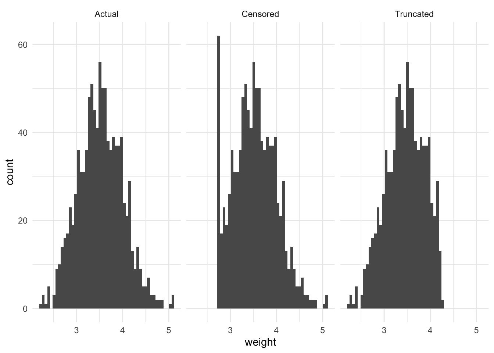
newborn_weight |>
summarise(mean = mean(weight, na.rm = TRUE),
.by = measurement) |>
tt() |>
style_tt(j = 1:2, align = "lr") |>
format_tt(digits = 3, num_fmt = "decimal") |>
setNames(c("측정", "평균"))| 측정 | 평균 |
|---|---|
| Actual | 3.521 |
| Censored | 3.53 |
| Truncated | 3.455 |
6.2.3 결측 데이터
데이터 수집 프로세스가 아무리 좋아도 결측 데이터가 있을 것입니다.\index{missing data} 즉, 우리가 가지고 있지 않다는 것을 아는 관측치입니다. 그러나 변수는 측정되거나 적어도 생각하고 고려되어야 결측될 수 있습니다. 충분한 고려가 없으면 변수가 전혀 고려되지 않았기 때문에 우리가 결측되었다는 사실조차 모르는 결측 데이터의 위험이 있습니다. 그것들은 “짖지 않은 개”라는 의미에서 결측된 것입니다. 이것이 상황에 대해 생각하고, 스케치하고 시뮬레이션하고, 주제 전문가와 협력하는 것이 매우 중요한 이유입니다.
무응답은 측정 오차의 변형으로 간주될 수 있습니다.\index{measurement!error} 즉, 실제 값이 있어야 함에도 불구하고 null을 관찰하는 것입니다.\index{missing data!non-response} 그러나 일반적으로 자체적으로 고려됩니다. 그리고 무응답의 정도는 다양합니다. 설문 조사에 응답하기를 거부하는 것부터 한 질문만 누락하는 것까지 다양합니다. 무응답은 특히 비확률 표본에서 핵심적인 문제인데, 응답하지 않는 사람들이 응답하는 사람들과 체계적으로 다르다고 생각할 만한 충분한 이유가 있기 때문입니다.\index{sampling!non-probability} 그리고 이것은 설문 조사가 설문 조사 응답자 이상을 말하는 데 사용될 수 있는 정도를 제한하는 역할을 합니다. (gelman2016mythical은?) 선거를 앞두고 보고되는 여론의 많은 변화가 사람들이 마음을 바꾸는 것이 아니라 차등적인 무응답이라고까지 말합니다. 즉, 개인이 상황에 따라 설문 조사에 응답할지 여부를 선택하는 것이지, 어떤 설문 조사 응답을 선택할지 선택하는 것이 아닙니다. 사전 통지 및 알림을 사용하면 일부 상황에서 무응답을 해결하는 데 도움이 될 수 있습니다(Koitsalu 기타 2018; Frandell 기타 2021).
무응답 편향이 특히 만연했을 수 있는 한 가지 상황은 시험 응시입니다. 국제 학생 평가 프로그램(PISA)은 다양한 표준화된 시험에서 15세 학생들의 성과를 국가 간에 비교하는 것입니다. 캐나다는 일반적으로 높은 순위를 차지합니다. 그러나 (Anders2020은?) 2015년에 캐나다 15세 학생의 절반만이 표본에 포함된 반면, 다른 일부 국가에서는 90% 이상이 포함되었음을 보여줍니다. 비교 가능한 표본을 사용하면 캐나다가 과도하게 성과를 내는 것으로 나타나지 않을 것이라고 그들은 발견했습니다.
데이터가 결측되는 이유는 응답자가 특정 질문 하나, 관련된 질문의 특정 모음 또는 전체 설문 조사에 응답하고 싶지 않았기 때문일 수 있지만, 이들은 상호 배타적이거나 총체적으로 완전하지는 않습니다(Newman 2014).\index{missing data!reasons} 이상적인 상황에서는 데이터가 완전히 무작위로 결측됩니다(MCAR).\index{missing data!types} 이것은 거의 발생하지 않지만, 만약 발생한다면 추론은 여전히 더 넓은 모집단을 반영해야 합니다. 데이터가 무작위로 결측(MAR)되거나 무작위가 아닌 결측(MNAR)될 가능성이 더 높습니다. 우리가 그것에 대해 걱정해야 하는 정도는 다릅니다. 예를 들어, 성별이 정치적 지지에 미치는 영향에 관심이 있다면, 남성이 설문 조사에 응답할 가능성이 낮을 수 있지만, 이것은 그들이 누구를 지지할지와 관련이 없을 수 있습니다. 그 차등 응답이 단지 남성이기 때문이고 정치적 지지와 관련이 없다면, 우리가 회귀에 성별을 포함하거나 성별에 따라 사후 층화할 수 있다면 계속 진행할 수 있을 것입니다. 그렇긴 하지만, 이 독립성이 유지될 가능성은 낮으며, (gelman2016mythical에서처럼?) 설문 조사 응답과 정치적 지지 사이에 관계가 있을 가능성이 더 높습니다. 그 더 가능성 있는 경우, 우리는 더 중요한 문제를 가질 수 있습니다. 한 가지 접근 방식은 추가 설명 변수를 고려하는 것입니다. 불완전한 사례를 삭제하고 싶을 수 있지만, 이것은 표본을 더욱 편향시킬 수 있으며, 정당화와 시뮬레이션의 지원이 필요합니다. 데이터 대체\index{data!imputation}를 고려할 수 있지만, 다시 표본을 편향시킬 수 있습니다. 이상적으로는 데이터 수집 프로세스를 재고하고 개선할 수 있습니다.
sec-exploratory-data-analysis에서 결측 데이터로 돌아갑니다.
6.3 인구 조사 및 기타 정부 데이터
데이터셋으로 사용될 목적으로 생산된 다양한 데이터 소스가 있습니다. 여기서는 특히 인구 조사를 생각할 수 있습니다.\index{census} Whitby (2020, p. 30-31)는 우리가 서면 기록을 가지고 있는 가장 오래된 인구 조사가 중국의 황하 유역에서 비롯되었다고 설명합니다.\index{census!China} 인구 조사의 한 가지 동기는 세금이었고, (jones1953census는?) 기원후 3세기 후반 또는 4세기 초반의 인구 조사 기록을 설명하며, 이는 새로운 조세 제도를 가능하게 했습니다. 인구 조사와 같은 상세한 기록은 또한 남용되었습니다. 예를 들어, Luebke 와/과 Milton (1994, p. 25)는 나치\index{census!Nazis}가 인구 조사 및 경찰 등록 데이터셋을 사용하여 “결국 추방 및 죽음으로 예정된 집단을 찾는” 방법을 설명합니다. 그리고 Bowen (2022, p. 17)은 미국 인구 조사국이 일본계 미국인의 인턴십에 기여한 정보를 제공했다고 설명합니다. 클린턴 대통령은 1990년대에 이에 대해 사과했습니다.\index{census!Japanese American internship}
의도적으로 데이터셋으로 구성된 또 다른 데이터 소스에는 실업, 인플레이션 및 GDP와 같은 경제 상황 조사와 같은 공식 통계가 포함됩니다.\index{statistics!official}\index{Gross Domestic Product} 흥미롭게도 (rockoff2019controversies는?) 이러한 경제 통계가 연방 정부에 의해 실제로 개발되지 않았다고 설명합니다. 비록 정부가 일반적으로 결국 그 역할을 맡았지만 말입니다. 인구 조사 및 기타 정부 운영 설문 조사는 국가의 권력과 재정 자원을 등에 업고 있어 다른 데이터셋이 할 수 없는 방식으로 철저할 수 있습니다. 예를 들어, 2020년 미국 인구 조사는 156억 달러의 비용이 들 것으로 추정됩니다(Hawes 2020). 그러나 이것은 마찬가지로 특정 관점을 가져옵니다. 모든 데이터와 마찬가지로 인구 조사 데이터도 비난할 수 없는 것은 아닙니다. 일반적인 오류에는 과소 및 과대 열거뿐만 아니라 오보가 포함됩니다(Steckel 1991). 품질을 평가하는 데 사용되는 다양한 측정 및 접근 방식이 있습니다(Statistics Canada 2023).\index{census!United States}
아, 그것에 대해 좋은 데이터가 있다고 생각하는군요!
인구 조사는 중요하지만 비난할 수 없는 것은 아닙니다. (anderson1999counts는?) 미국 인구 조사의 역사가 과소 집계의 역사이며, 조지 워싱턴조차도\index{census!George Washington} 1790년대에 이에 대해 불평했다고 설명합니다.\index{census!undercount} 과소 집계의 정도는 제2차 세계 대전에서 징병에 사용된 병역 등록 시스템으로 인해 추정되었습니다. 그 기록은 인구 조사 기록과 비교되었고, 징병 목적으로 기록된 남성이 인구 조사보다 약 50만 명 더 많다는 것이 발견되었습니다. 이것은 인종에 따라 달랐으며, 평균 과소 집계는 약 3%였지만, 징병 연령의 흑인 남성의 과소 집계는 약 13%였습니다(Anderson 와/과 Fienberg 1999, p. 29).\index{census!race}\index{bias!race} 이것은 1960년대에 정치적 문제가 되었고, 인종 및 민족 관련 질문은 1990년대에 특히 우려되었습니다. Nobles (2002, p. 47)은 인종별로 세는 것이 먼저 인종이 존재해야 하지만, 이것이 생물학적으로 확립하기 어려울 수 있다고 논의합니다.\index{bias!race} 인종이 미국 인구 조사에 얼마나 근본적인지에도 불구하고, 그것은 “고정된” 및 “객관적인” 것이 아니라 계급, 사회, 법률, 구조 및 정치적 측면의 영향을 받습니다(Nobles 2002, p. 48).
거인의 어깨 위에 서서
마고 앤더슨\index{Anderson, Margo}은 위스콘신-밀워키 대학교의 역사 및 도시 연구 특훈 교수입니다. 1978년 럿거스 대학교에서 역사학 박사 학위를 받은 후, 그녀는 위스콘신-밀워키 대학교에 합류하여 1987년에 교수로 승진했습니다. Anderson 와/과 Fienberg (1999) 외에도 그녀가 쓴 또 다른 중요한 책은 (anderson2015census입니다?). 그녀는 1998년에 미국 통계 협회 펠로우로 임명되었습니다.
또 다른 유사하게 크고 확립된 데이터 소스는 장기적인 대규모 설문 조사에서 비롯됩니다. 이들은 정기적으로 수행되며, 일반적으로 정부가 직접 수행하지는 않지만, 일반적으로 정부로부터 어떤 식으로든 자금을 지원받습니다. 예를 들어, 여기서는 종종 1965년 이후 모든 연방 선거와 관련하여 실시된 캐나다 선거 연구와 같이 선거 설문 조사를 생각합니다. 마찬가지로 1964년 이후 모든 총선과 관련하여 실시된 영국 선거 연구도 있습니다.
최근에는 정부의 개방형 데이터에 대한 큰 움직임이 있었습니다. 정부가 가지고 있는 데이터를 이용 가능하게 해야 한다는 기본 원칙은 부인할 수 없습니다. 그러나 이 용어는 실제로 어떻게 발생했는지 때문에 약간 논란의 여지가 있습니다. 정부는 제공하고 싶은 데이터만 제공합니다. 우리는 때때로 정부의 서술에 맞게 데이터를 조작하는 것을 볼 수도 있습니다(Kalgin 2014; Zhang 기타 2019; Berdine, Geloso, 와/과 Powell 2018). 정부가 가지고 있지만 반드시 제공하고 싶지 않은 데이터를 얻는 한 가지 방법은 정보 자유(FOI) 요청을 제출하는 것입니다(Walby 와/과 Luscombe 2019). 예를 들어, (biasbehindbars는?) FOI의 데이터를 사용하여 캐나다 교도소 시스템에서 체계적인 인종 차별의 증거를 찾습니다.
양식 데이터셋은 항상 유용했지만, 프로그래밍 언어를 사용하지 않고 많은 분석이 수행되던 시기에 개발되었습니다. 이러한 데이터셋을 R로 가져오는 것을 더 쉽게 만들기 위해 많은 R 패키지가 개발되었습니다. 여기서는 특히 유용한 몇 가지를 다룹니다.
6.3.1 캐나다
캐나다 최초의 인구 조사는 1666년에 실시되었습니다.\index{census!Canada} 이것은 또한 모든 개인이 이름으로 기록된 최초의 현대 인구 조사였지만, 원주민은 포함하지 않습니다(Godfrey 1918, p. 179). 3,215명의 주민이 집계되었으며, 인구 조사는 나이, 성별, 결혼 여부 및 직업에 대해 질문했습니다(Statistics Canada 2023). 1867년 캐나다 연방과 관련하여, 새로운 의회에 정치 대표를 할당하기 위해 10년마다 인구 조사가 요구되었습니다. 그 이후로 정기적인 인구 조사가 있었습니다.
canlang을 사용하여 2016년 인구 조사에서 캐나다에서 사용되는 언어에 대한 일부 데이터를 탐색할 수 있습니다. 이 패키지는 CRAN에 없지만 GitHub에서 install.packages("devtools") 후 devtools::install_github("ttimbers/canlang")로 설치할 수 있습니다.\index{packages!install}
canlang을 로드한 후 can_lang 데이터셋을 사용할 수 있습니다. 이것은 214개 언어 각각을 사용하는 캐나다인의 수를 제공합니다.
can_lang# A tibble: 214 × 6
category language mother_tongue most_at_home most_at_work lang_known
<chr> <chr> <dbl> <dbl> <dbl> <dbl>
1 Aboriginal langu… Aborigi… 590 235 30 665
2 Non-Official & N… Afrikaa… 10260 4785 85 23415
3 Non-Official & N… Afro-As… 1150 445 10 2775
4 Non-Official & N… Akan (T… 13460 5985 25 22150
5 Non-Official & N… Albanian 26895 13135 345 31930
6 Aboriginal langu… Algonqu… 45 10 0 120
7 Aboriginal langu… Algonqu… 1260 370 40 2480
8 Non-Official & N… America… 2685 3020 1145 21930
9 Non-Official & N… Amharic 22465 12785 200 33670
10 Non-Official & N… Arabic 419890 223535 5585 629055
# ℹ 204 more rows우리는 모국어로 가장 흔한 상위 10개 언어를 빠르게 볼 수 있습니다.
can_lang |>
slice_max(mother_tongue, n = 10) |>
select(language, mother_tongue)# A tibble: 10 × 2
language mother_tongue
<chr> <dbl>
1 English 19460850
2 French 7166700
3 Mandarin 592040
4 Cantonese 565270
5 Punjabi (Panjabi) 501680
6 Spanish 458850
7 Tagalog (Pilipino, Filipino) 431385
8 Arabic 419890
9 German 384040
10 Italian 375635region_lang과 region_data라는 두 데이터셋을 결합하여 가장 큰 지역인 토론토와 가장 작은 지역인 벨빌 간에 가장 흔한 5개 언어가 다른지 확인할 수 있습니다.
region_lang |>
left_join(region_data, by = "region") |>
slice_max(c(population)) |>
slice_max(mother_tongue, n = 5) |>
select(region, language, mother_tongue, population) |>
mutate(prop = mother_tongue / population)# A tibble: 5 × 5
region language mother_tongue population prop
<chr> <chr> <dbl> <dbl> <dbl>
1 Toronto English 3061820 5928040 0.516
2 Toronto Cantonese 247710 5928040 0.0418
3 Toronto Mandarin 227085 5928040 0.0383
4 Toronto Punjabi (Panjabi) 171225 5928040 0.0289
5 Toronto Italian 151415 5928040 0.0255region_lang |>
left_join(region_data, by = "region") |>
slice_min(c(population)) |>
slice_max(mother_tongue, n = 5) |>
select(region, language, mother_tongue, population) |>
mutate(prop = mother_tongue / population)# A tibble: 5 × 5
region language mother_tongue population prop
<chr> <chr> <dbl> <dbl> <dbl>
1 Belleville English 93655 103472 0.905
2 Belleville French 2675 103472 0.0259
3 Belleville German 635 103472 0.00614
4 Belleville Dutch 600 103472 0.00580
5 Belleville Spanish 350 103472 0.00338토론토에서는 50%가 조금 넘는 사람들이 영어를 모국어로 사용하는 반면, 벨빌에서는 약 90%가 영어를 모국어로 사용하는 등 비율에 상당한 차이가 있음을 알 수 있습니다.
일반적으로 캐나다 인구 조사 데이터는 다른 국가에 비해 관련 정부 기관을 통해 쉽게 이용할 수 없지만, 나중에 논의할 통합 공공 이용 마이크로데이터 시리즈(IPUMS)는 일부에 대한 접근을 제공합니다. 인구 조사 및 기타 공식 통계를 담당하는 정부 기관인 캐나다 통계청\index{Canada!Statistics Canada}은 2016년 인구 조사의 “개인 파일”을 공공 이용 마이크로데이터 파일(PUMF)로 무료로 제공하지만 요청에 응해서만 제공합니다. 그리고 2016년 인구 조사의 2.7% 표본이지만 이 PUMF는 제한된 세부 정보만 제공합니다.
캐나다 인구 조사 데이터에 접근하는 또 다른 방법은 cancensus를 사용하는 것입니다.\index{census!Canada} API 키가 필요하며\index{API}, 계정을 만든 다음 “프로필 편집”으로 이동하여 요청할 수 있습니다. 이 패키지에는 API 키를 “.Renviron” 파일에 더 쉽게 추가할 수 있는 도우미 함수가 있으며, 이에 대해서는 sec-gather-data에서 더 자세히 설명하겠습니다.
cancensus를 설치하고 로드한 후 get_census()를 사용하여 인구 조사 데이터를 얻을 수 있습니다. 관심 있는 인구 조사와 다양한 기타 인수를 지정해야 합니다. 예를 들어, 인구 기준으로 캐나다에서 가장 큰 주인 온타리오에 대한 2016년 인구 조사 데이터를 얻을 수 있습니다.\index{Canada}
set_api_key("YOUR_API_KEY_HERE", install = TRUE)
ontario_population <-
get_census(
dataset = "CA16",
level = "Regions",
vectors = "v_CA16_1",
regions = list(PR = c("35"))
)
ontario_population# A tibble: 1 × 9
GeoUID Type `Region Name` `Area (sq km)` Population Dwellings Households
<chr> <fct> <fct> <dbl> <dbl> <dbl> <dbl>
1 35 PR Ontario 986722. 13448494 5598391 5169174
# ℹ 2 more variables: C_UID <chr>, `v_CA16_1: Age Stats` <dbl>1996년 이후의 인구 조사 데이터를 사용할 수 있으며, list_census_datasets()는 이러한 데이터에 접근하기 위해 get_census()에 제공해야 하는 메타데이터를 제공합니다. 데이터는 다양한 지역을 기반으로 사용할 수 있으며, list_census_regions()는 필요한 메타데이터를 제공합니다. 마지막으로, list_census_vectors()는 사용 가능한 변수에 대한 메타데이터를 제공합니다.
6.3.2 미국
6.3.2.1 인구조사
인구 조사는 미국 헌법에 포함되어 있지만, 1639년 초 매사추세츠가 된 지역에서는 출생과 사망이 법적으로 등록되어야 했습니다(Gutman 1958).\index{census!United States} 설치하고 로드한 후 tidycensus를 사용하여 미국 인구 조사 데이터에 접근할 수 있습니다. cancensus와 마찬가지로 먼저 인구 조사국 API에서 API 키를 얻고 도우미 함수를 사용하여 로컬에 저장해야 합니다.\index{API}
설정이 완료되면 get_decennial()을 사용하여 관심 변수에 대한 데이터를 얻을 수 있습니다. 예를 들어, 2010년 특정 주에 대한 전체 및 소유자 또는 임차인별 평균 가구 규모에 대한 데이터를 수집할 수 있습니다(그림 fig-utahvsdc).
census_api_key("YOUR_API_KEY_HERE")
us_ave_household_size_2010 <-
get_decennial(
geography = "state",
variables = c("H012001", "H012002", "H012003"),
year = 2010
)
us_ave_household_size_2010 |>
filter(NAME %in% c("District of Columbia", "Utah", "Massachusetts")) |>
ggplot(aes(y = NAME, x = value, color = variable)) +
geom_point() +
theme_minimal() +
labs(
x = "평균 가구 규모", y = "주", color = "가구 유형"
) +
scale_color_brewer(
palette = "Set1", labels = c("전체", "소유자 점유", "임차인 점유")
)
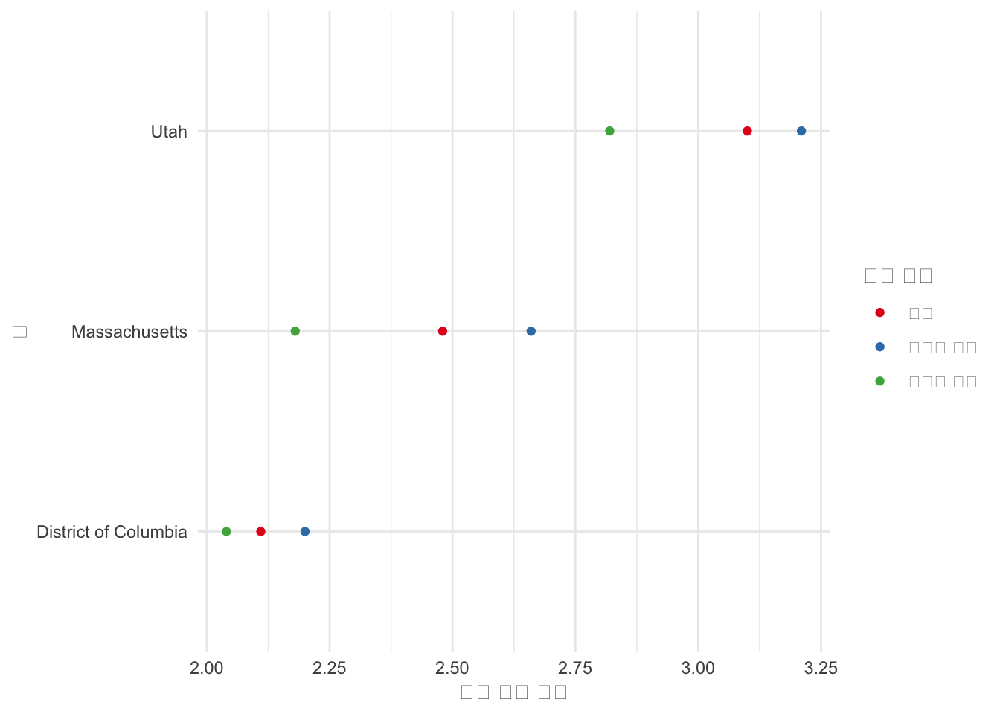
(walker2022는?) R로 미국 인구 조사 데이터를 분석하는 방법에 대해 더 자세히 설명합니다.\index{census!United States}
6.3.2.2 미국 지역사회 조사
미국은 일반적으로 인구 조사를 사용하는 것보다 더 나은 접근 방식이 있고 정부 통계 기관 웹사이트를 사용해야 하는 것보다 더 나은 방법이 있는 부러운 상황에 있습니다.\index{IPUMS} IPUMS는 국제 인구 조사 마이크로데이터를 포함한 광범위한 데이터셋에 대한 접근을 제공합니다. 미국의 특정 경우, 미국 지역사회 조사(ACS)는 많은 인구 조사에서 질문하는 내용과 내용이 유사한 설문 조사이지만, 데이터가 사용 가능해질 때까지 상당히 오래될 수 있는 인구 조사와 비교하여 연간 단위로 제공됩니다.\index{American Community Survey} 매년 수백만 건의 응답으로 끝납니다. ACS는 인구 조사보다 작지만, 더 시기적절하게 사용할 수 있다는 장점이 있습니다. 우리는 IPUMS를 통해 ACS에 접근합니다.
거인의 어깨 위에 서서
스티븐 러글스\index{Ruggles, Steven}는 미네소타 대학교의 역사 및 인구 연구 리전트 교수이며 IPUMS를 담당하고 있습니다.\index{IPUMS} 1984년 펜실베이니아 대학교에서 역사 인구 통계학\index{demography} 박사 학위를 받은 후, 그는 미네소타 대학교의 조교수로 임명되었고 1995년에 정교수로 승진했습니다. 초기 IPUMS 데이터 릴리스는 1993년에 있었습니다(Sobek 와/과 Ruggles 1999). 그 이후로 성장하여 현재 많은 국가의 사회 및 경제 데이터를 포함합니다. 러글스는 2022년에 맥아더 재단 펠로우십을 수상했습니다.\index{MacArthur Foundation Fellowship}
IPUMS로 이동한 다음 “IPUMS USA”를 클릭하고 “데이터 가져오기”를 클릭합니다. 우리는 표본에 관심이 있으므로 “표본 선택”으로 이동합니다. “각 연도의 기본 표본”을 선택 취소하고 대신 “2019 ACS”를 선택한 다음 “표본 선택 제출”을 클릭합니다(그림 fig-ipumstwo).\index{IPUMS}
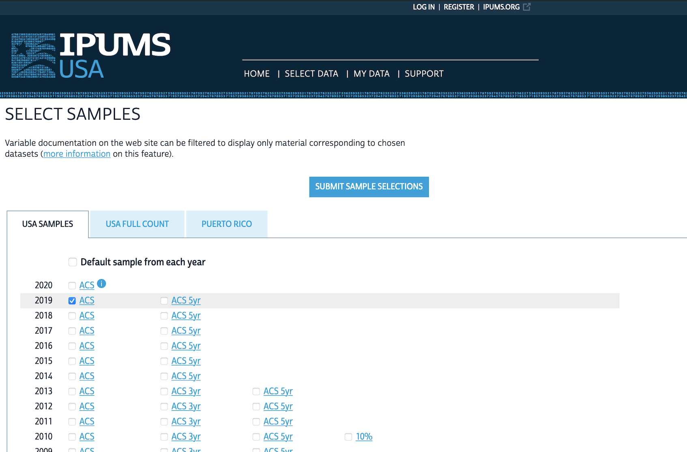
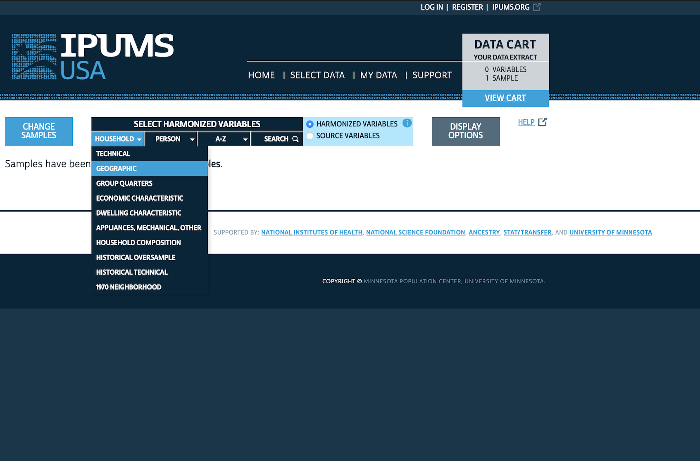
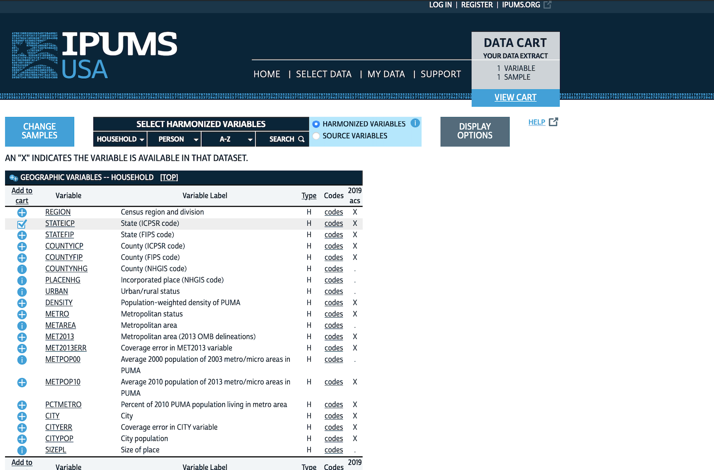
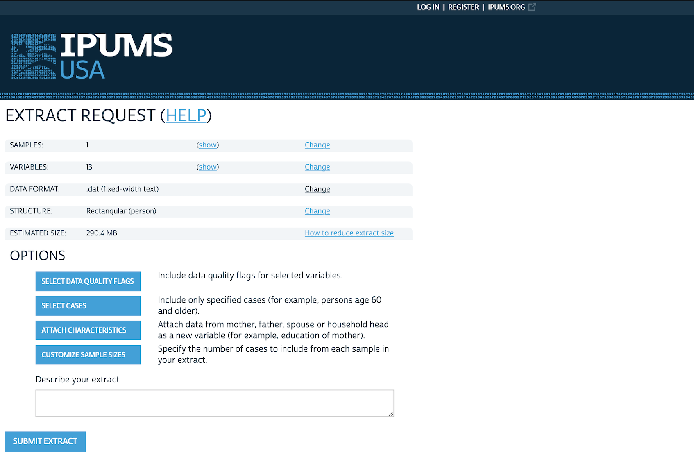
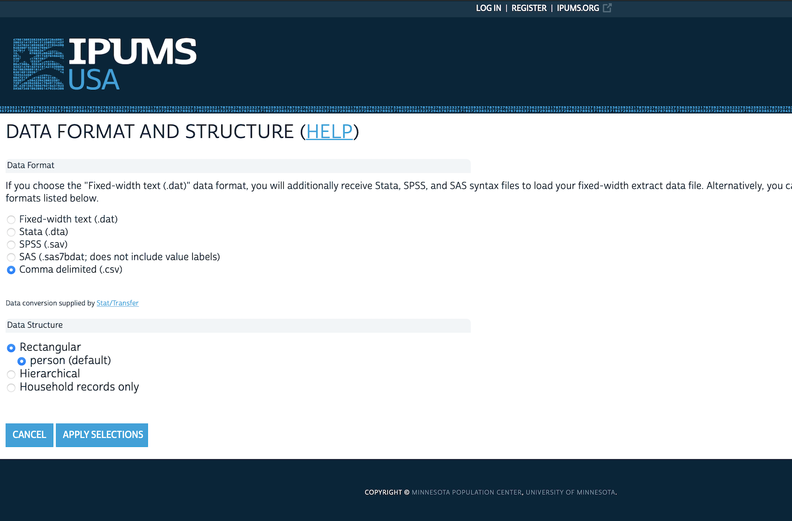
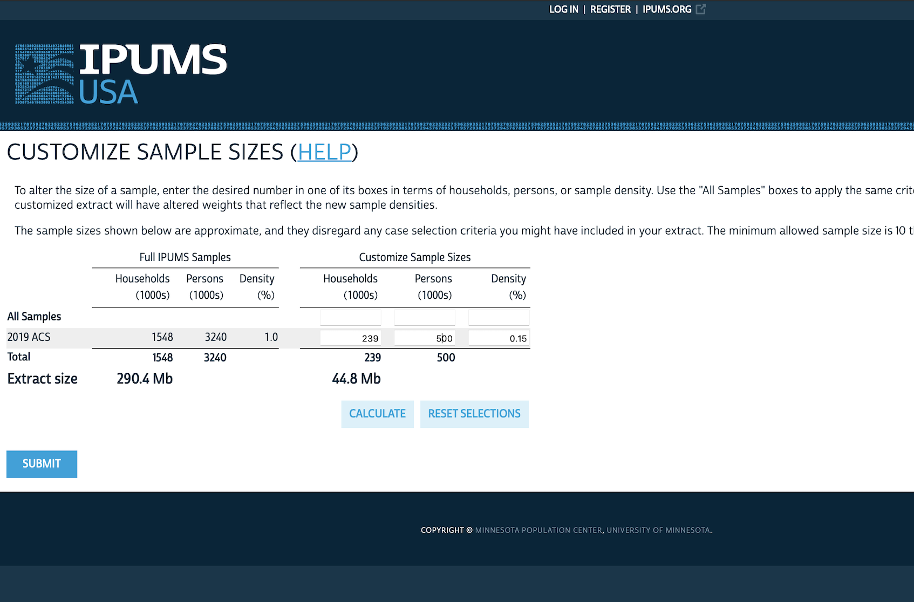
우리는 주별 데이터에 관심이 있을 수 있습니다. “HOUSEHOLD” 변수를 보고 “GEOGRAPHIC”을 선택하여 시작합니다(그림 fig-ipumsfour). 더하기를 클릭하여 “STATEICP”를 “장바구니”에 추가하면 체크 표시로 바뀝니다(그림 fig-ipumssix). 그런 다음 “PERSON” 기준의 데이터, 예를 들어 “DEMOGRAPHIC” 변수인 “AGE”에 관심이 있을 수 있으며, 이를 장바구니에 추가해야 합니다. 또한 “SEX”와 “EDUC”(둘 다 “PERSON”에 있음)도 원합니다.
완료되면 “장바구니 보기”를 클릭한 다음 “데이터 추출 생성”을 클릭합니다(그림 fig-ipumseight). 이 시점에서 변경하고 싶은 두 가지 측면이 있습니다.
- “DATA FORMAT”을 “.dat”에서 “.dta”로 변경합니다(그림 fig-ipumsnine).
- 3백만 개의 응답이 필요하지 않을 수 있으므로 표본 크기를 사용자 지정하고, 예를 들어 500,000개로 변경할 수 있습니다(그림 fig-ipumsten).
요청의 크기를 간략하게 확인하십시오. 약 40MB를 훨씬 넘지 않아야 합니다. 그렇다면 실수로 필요하지 않은 변수가 선택되었는지 확인하거나 관측치 수를 더 줄이십시오.
마지막으로, 추출물에 대한 설명적인 이름을 포함하고 싶습니다. 예를 들어, “2023-05-15: 주, 나이, 성별, 교육”과 같이 추출한 날짜와 추출물에 포함된 내용을 지정합니다. 그 후에 “추출 제출”을 클릭할 수 있습니다.
로그인하거나 계정을 만들라는 요청을 받게 되며, 그 후에 요청을 제출할 수 있습니다. IPUMS는 추출물이 사용 가능해지면 이메일을 보내며, 그 후에 다운로드하여 일반적인 방법으로 R로 읽을 수 있습니다. 데이터셋이 로컬에 “usa_00015.dta”로 저장되었다고 가정합니다(데이터셋 파일 이름이 약간 다를 수 있음).
이 데이터셋을 사용할 때 인용하는 것이 중요합니다. 예를 들어, (ipumsusa에?) 대해 다음 BibTeX 항목을 사용할 수 있습니다.\index{citation!IPUMS}
@misc{ipumsusa,
author = {Ruggles, Steven and Flood, Sarah and Foster, Sophia and Goeken, Ronald and Pacas, Jose and Schouweiler, Megan and Sobek, Matthew},
year = 2021,
title = {IPUMS USA: Version 11.0},
publisher = {Minneapolis, MN: IPUMS},
doi = {10.18128/d010.v11.0},
url = {https://usa.ipums.org},
language = {en},
}sec-multilevel-regression-with-post-stratification에서 이 데이터셋을 사용할 것이므로 간략하게 정리하고 준비하겠습니다. 우리의 코드는 (greatstudentwork를?) 기반으로 합니다.
ipums_extract <- read_dta("usa_00015.dta")
ipums_extract <-
ipums_extract |>
select(stateicp, sex, age, educd) |>
to_factor()
ipums_extract# A tibble: 500,221 × 4
stateicp sex age educd
* <fct> <fct> <fct> <fct>
1 alabama male 77 grade 9
2 alabama male 62 1 or more years of college credit, no degree
3 alabama male 25 ged or alternative credential
4 alabama female 20 1 or more years of college credit, no degree
5 alabama male 37 1 or more years of college credit, no degree
6 alabama female 19 regular high school diploma
7 alabama female 67 regular high school diploma
8 alabama female 20 1 or more years of college credit, no degree
9 alabama male 66 grade 8
10 alabama male 58 regular high school diploma
# ℹ 500,211 more rowscleaned_ipums <-
ipums_extract |>
mutate(age = as.numeric(age)) |>
filter(age >= 18) |>
rename(gender = sex) |>
mutate(
age_group = case_when(
age <= 29 ~ "18-29",
age <= 44 ~ "30-44",
age <= 59 ~ "45-59",
age >= 60 ~ "60+",
TRUE ~ "Trouble"
),
education_level = case_when(
educd %in% c(
"nursery school, preschool", "kindergarten", "grade 1",
"grade 2", "grade 3", "grade 4", "grade 5", "grade 6",
"grade 7", "grade 8", "grade 9", "grade 10", "grade 11",
"12th grade, no diploma", "regular high school diploma",
"ged or alternative credential", "no schooling completed"
) ~ "High school or less",
educd %in% c(
"some college, but less than 1 year",
"1 or more years of college credit, no degree"
) ~ "Some post sec",
educd %in% c("associate's degree, type not specified",
"bachelor's degree") ~ "Post sec +",
educd %in% c(
"master's degree",
"professional degree beyond a bachelor's degree",
"doctoral degree"
) ~ "Grad degree",
TRUE ~ "Trouble"
)
) |>
select(gender, age_group, education_level, stateicp) |>
mutate(across(c(
gender, stateicp, education_level, age_group),
as_factor)) |>
mutate(age_group =
factor(age_group, levels = c("18-29", "30-44", "45-59", "60+")))
cleaned_ipums# A tibble: 407,354 × 4
gender age_group education_level stateicp
<fct> <fct> <fct> <fct>
1 male 60+ High school or less alabama
2 male 60+ Some post sec alabama
3 male 18-29 High school or less alabama
4 female 18-29 Some post sec alabama
5 male 30-44 Some post sec alabama
6 female 18-29 High school or less alabama
7 female 60+ High school or less alabama
8 female 18-29 Some post sec alabama
9 male 60+ High school or less alabama
10 male 45-59 High school or less alabama
# ℹ 407,344 more rowssec-multilevel-regression-with-post-stratification에서 이 데이터셋을 사용할 것이므로 저장하겠습니다.
write_csv(x = cleaned_ipums,
file = "cleaned_ipums.csv")일부 변수도 살펴볼 수 있습니다(그림 fig-ipumsquickgraph).
cleaned_ipums |>
ggplot(mapping = aes(x = age_group, fill = gender)) +
geom_bar(position = "dodge2") +
theme_minimal() +
labs(
x = "응답자 연령 그룹",
y = "응답자 수",
fill = "교육"
) +
facet_wrap(vars(education_level)) +
guides(x = guide_axis(angle = 90)) +
theme(legend.position = "bottom") +
scale_fill_brewer(palette = "Set1")
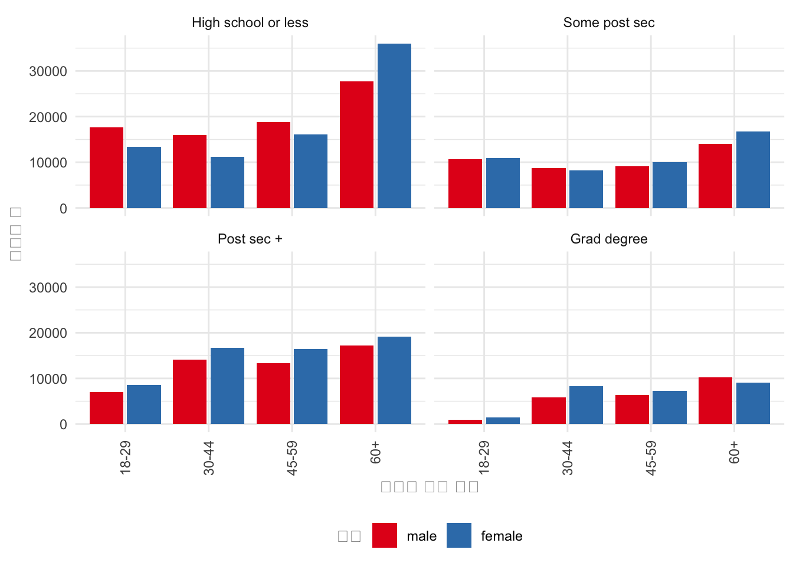
전체 집계 데이터, 즉 전체 인구 조사는 1890년을 제외하고 1850년에서 1940년 사이에 실시된 미국 인구 조사에 대해 IPUMS\index{IPUMS}를 통해 사용할 수 있습니다.\index{census!United States} 1890년 인구 조사 기록의 대부분은 1921년 화재로 소실되었습니다. 1990년까지 모든 인구 조사에 대해 1% 표본을 사용할 수 있습니다. ACS 데이터는 2000년부터 사용할 수 있습니다.
6.4 표본 추출의 필수 사항
통계학\index{statistics}은 우리가 원하는 모든 데이터를 얻는 것이 거의 불가능하기 때문에 데이터로 이야기를 하는 것의 핵심입니다. 통계학자들은 다양한 데이터 표본이 가질 속성과 그것들이 더 넓은 모집단에 대한 함의를 말할 수 있게 하는 방법에 대해 상당한 시간과 노력을 들였습니다.\index{sampling}
데이터가 있다고 가정해 봅시다.\index{simulation!toddler bedtime} 예를 들어, 특정 유아는 매일 저녁 6시에 잠자리에 듭니다. 우리는 그 취침 시간이 모든 유아에게 공통적인지, 아니면 특이한 유아를 가지고 있는지 알고 싶을 수 있습니다. 유아가 한 명뿐이라면 그들의 취침 시간을 사용하여 모든 유아에 대해 말하는 능력은 제한될 것입니다.
한 가지 접근 방식은 유아를 둔 친구들과 이야기하는 것입니다. 그런 다음 친구의 친구들과 이야기합니다. 유아 취침 시간에 대한 어떤 근본적인 진실에 대해 말할 수 있다고 편안하게 느끼기 시작하기 전에 얼마나 많은 친구와 친구의 친구들에게 물어봐야 할까요?
Wu 와/과 Thompson (2020, p. 3)은 통계학\index{statistics!definition}을 “데이터를 수집하고 분석하며 알려지지 않은 모집단에 대한 진술과 결론을 도출하는 방법에 대한 과학”으로 설명합니다. 여기서 “모집단”은 통계적 의미로 사용되며, 우리가 정확히 알 수는 없지만 무작위 변수의 확률 분포를 사용하여 특성을 설명할 수 있는 어떤 무한한 그룹을 의미합니다. 우리는 sec-its-just-a-linear-model에서 확률 분포\index{distribution!probability}에 대해 더 자세히 논의합니다. Fisher ([1925년] 1928, p. 41)는 더 나아가 다음과 같이 말합니다.\index{Fisher, Ronald}
하나 이상의 특성에 대한 빈도 분포로 분포된 무한 모집단에 대한 아이디어는 모든 통계 작업의 기본입니다. 제한된 경험에서… 우리는 우리 표본이 추출된 무한한 가상 모집단에 대한 어떤 아이디어를 얻을 수 있으며, 따라서 우리 결론이 적용될 미래 표본의 가능한 성격에 대한 아이디어를 얻을 수 있습니다.
이것을 다른 방식으로 말하면, 통계학\index{statistics}은 모든 데이터를 가질 수 없음에도 불구하고 일부 데이터를 얻고 그것을 기반으로 합리적인 것을 말하려고 시도하는 것을 포함합니다.
세 가지 중요한 용어는 다음과 같습니다.
- “목표 모집단”: 우리가 결론을 내리고자 하는 모든 항목의 집합입니다.\index{sampling!target population}
- “표집 틀”: 목표 모집단에서 데이터를 얻을 수 있는 모든 항목의 목록입니다.\index{sampling!sampling frame}
- “표본”: 표집 틀에서 데이터를 얻는 항목입니다.\index{sampling!sample}
목표 모집단은 크기가 \(N\)인 레이블이 지정된 항목의 유한 집합입니다.\index{sampling!target population} 예를 들어, 이론적으로 우리는 세상의 모든 책에 “책 1”, “책 2”, “책 3”, \(\dots\), “책 \(N\)”과 같이 레이블을 추가할 수 있습니다. 여기서 모집단이라는 용어의 사용과 일상적인 사용법 사이에는 차이가 있습니다.\index{census!sampling error} 예를 들어, 인구 조사 데이터를 다루는 사람들은 국가 전체 인구를 가지고 있기 때문에 표본 추출에 대해 걱정할 필요가 없다고 말하는 것을 때때로 듣습니다. 이것은 용어의 혼동이며, 그들이 가지고 있는 것은 국가 인구의 인구 조사에 의해 수집된 표본입니다. 인구 조사의 목표는 모든 단위를 얻는 것이지만(그리고 이것이 달성되면 표본 추출 오차는 덜 문제가 될 것입니다), 여전히 다른 많은 문제가 있을 것입니다. 인구 조사가 완벽하게 수행되고 목표 모집단의 모든 단위에 대한 데이터를 얻더라도, 예를 들어 측정 오차로 인한 문제와 특정 시점의 표본이라는 문제가 여전히 있습니다. (totalsurveyerror는?) 전체 설문 조사 오차의 진화에 대한 논의를 제공합니다.\index{census!total survey error}
측정할 대상을 정의하기가 얼마나 어려운지 본 것처럼, 목표 모집단을 정의하기도 어려울 수 있습니다.\index{sampling!target population} 예를 들어, 대학생들의 소비 습관에 대해 알아봐 달라는 요청을 받았다고 가정해 봅시다. 그 목표 모집단을 어떻게 정의할 수 있을까요? 학생이지만 정규직으로 일하는 사람은 모집단에 포함될까요? 다른 책임을 가질 수 있는 성인 학생은 어떻습니까? 우리가 관심 있을 수 있는 일부 측면은 항상 일반적으로 인식되는 정도까지 공식적으로 정의됩니다. 예를 들어, 한 지역이 도시로 분류되는지 농촌으로 분류되는지는 종종 국가 통계 기관에 의해 공식적으로 정의됩니다. 그러나 다른 측면은 덜 명확합니다. Gelman, Hill, 와/과 Vehtari (2020, p. 24)은 누군가를 “흡연자”로 분류하는 방법의 어려움에 대해 논의합니다. 15세가 평생 100개비의 담배를 피웠다면, 우리는 그들을 전혀 피우지 않은 사람과 다르게 대해야 합니다. 그러나 90세가 평생 100개비의 담배를 피웠다면, 그들은 전혀 피우지 않은 90세와 다를 가능성이 있을까요? 어떤 나이와 담배 수에서 이러한 대답이 바뀔까요?
지금까지 쓰여진 모든 책의 제목에 대해 이야기하고 싶다고 가정해 봅시다. 우리의 목표 모집단은 지금까지 쓰여진 모든 책입니다. 그러나 19세기에 쓰여졌지만 저자가 책상에 잠그고 아무에게도 말하지 않은 책의 제목에 대한 정보를 얻을 수 있다고 상상하기는 거의 불가능합니다.\index{sampling!target population} 한 가지 표집 틀은 의회 도서관 온라인 카탈로그의 모든 책일 수 있고, 다른 하나는 구글이 디지털화한 2,500만 권의 책일 수 있습니다(Somers 2017).\index{sampling!sampling frame} 우리의 표본은 나중에 사용할 구텐베르크 프로젝트를 통해 이용 가능한 수만 권의 책일 수 있습니다.
또 다른 예를 들어, 독일에 거주하는 모든 브라질인의 태도에 대해 이야기하고 싶다고 가정해 봅시다. 목표 모집단은 독일에 거주하는 모든 브라질인입니다. 한 가지 가능한 정보 출처는 페이스북일 수 있으므로 이 경우 표집 틀은 페이스북을 가진 독일에 거주하는 모든 브라질인일 수 있습니다. 그리고 우리의 표본은 우리가 데이터를 수집할 수 있는 페이스북을 가진 독일에 거주하는 모든 브라질인일 수 있습니다. 독일에 거주하는 모든 브라질인이 페이스북을 가지고 있지는 않기 때문에 목표 모집단과 표집 틀은 다를 것입니다. 그리고 우리가 페이스북을 가진 독일에 거주하는 모든 브라질인에 대한 데이터를 수집할 수 없을 가능성이 높기 때문에 표집 틀은 표본과 다를 것입니다.
6.4.1 더블린과 리딩에서의 표본 추출
더 명확하게 하기 위해 두 가지 예를 고려합니다. 1798년 아일랜드 더블린의 주민 수 조사(Whitelaw 1805)와 1912년 영국 리딩의 노동자 계층 가구 조사(Bowley 1913)입니다.
6.4.1.1 1798년 더블린 조사
1798년 제임스 휘틀로 목사는 아일랜드 더블린의 인구를 세기 위해 조사를 실시했습니다.\index{Ireland!Population of Dublin in 1798} (whitelaw1805는?) 당시 인구 추정치가 상당히 다양했다고 설명합니다. 예를 들어, 당시 런던의 추정 인구는 128,570명에서 300,000명에 달했습니다. 휘틀로는 더블린 시장이 각 가구의 책임자에게 그 가구의 주민 목록을 문에 부착하도록 강제할 수 있고, 그러면 휘틀로는 이것을 간단히 사용할 수 있을 것이라고 예상했습니다.
대신, 그는 목록이 “자주 읽기 어렵고, 실제 숫자보다 3분의 1 또는 심지어 절반이 부족하다”는 것을 발견했습니다. 그래서 대신 그는 조수를 모집했고, 그들은 집집마다 다니며 직접 수를 셌습니다. 그 결과 추정치는 특히 유익합니다(그림 fig-whitelawsresults). 1798년 더블린의 총인구는 182,370명으로 추정되었습니다.
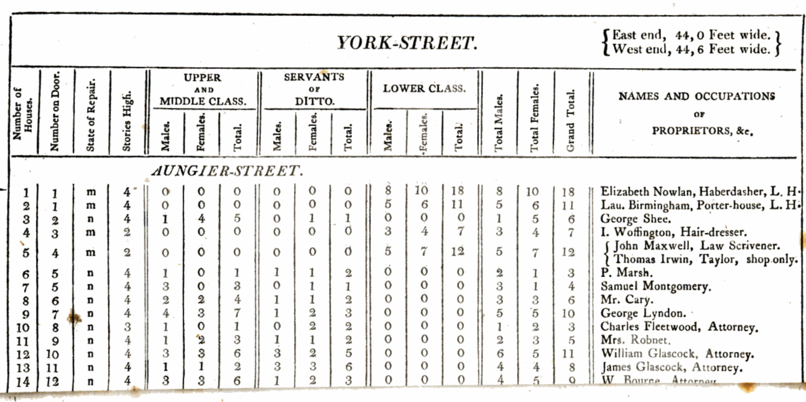
주목할 만한 한 가지 측면은 휘틀로가 계급에 대한 정보를 포함한다는 것입니다. 그것이 어떻게 결정되었는지 알기는 어렵지만, 데이터 수집에 큰 역할을 했습니다. 휘틀로는 “중산층과 상류층의 집에는 항상 [목록을 만드는] 작업에 능숙한 개인이 있었다”고 설명합니다. 그러나 “이 도시 인구의 대부분을 형성하는 하층 계급 사이에서는 상황이 매우 달랐다”고 합니다. 휘틀로가 상류층과 하류층의 집에 들어가지 않고는 그것을 어떻게 알 수 있었는지 알기 어렵습니다. 그러나 휘틀로가 상류층의 집에 들어가 그들의 수를 세는 것을 상상하기도 어렵습니다. 다른 접근 방식이 필요했을 수 있습니다.
휘틀로는 자신의 선택을 안내하기 위해 통계적 장치를 많이 사용하지 않고 더블린 주민의 전체 표본을 구성하려고 시도했습니다. 이제 1912년에 수행된 두 번째 예를 고려해 보겠습니다. 여기서는 오늘날에도 여전히 사용하는 표본 추출 접근 방식을 사용하기 시작할 수 있었습니다.
6.4.1.2 1912년 리딩의 노동자 계층 가구 조사
Whitelaw (1805) 이후 100여 년이 지난 후, (bowley1913working은?) 영국 리딩의 노동자 계층 가구 수를 세는 데 관심이 있었습니다.\index{England!survey in Reading} 볼리는 다음 절차를 사용하여 표본을 선택했습니다(Bowley 1913, p. 672):
지역 디렉토리 전체에서 거리의 알파벳 순서로 10개 건물 중 하나를 표시하여 총 1,950개 정도를 만들었습니다. 그 중 약 300개는 상점, 공장, 기관 및 비주거용 건물로 표시되었고, 약 300개는 주요 거주자 중에서 색인되어 그렇게 표시되었습니다. 나머지 1,350개는 노동자 계급 주택이었습니다… [나는] 중간 10분의 1에 대한 불완전한 정보를 거부하고 20개 주택 중 하나만 취하기로 결정했습니다. 방문객들은 정보를 얻기가 아무리 어렵거나 주택 유형이 어떻든 간에 표시된 주택을 다른 주택으로 대체하지 말라는 지시를 받았습니다.
(bowley1913working은?) 622개의 노동자 계층 가구에 대한 정보를 얻을 수 있었다고 말합니다. 예를 들어, 그들은 매주 얼마의 임대료를 지불했는지 추정할 수 있었습니다(그림 fig-bowleyrents).
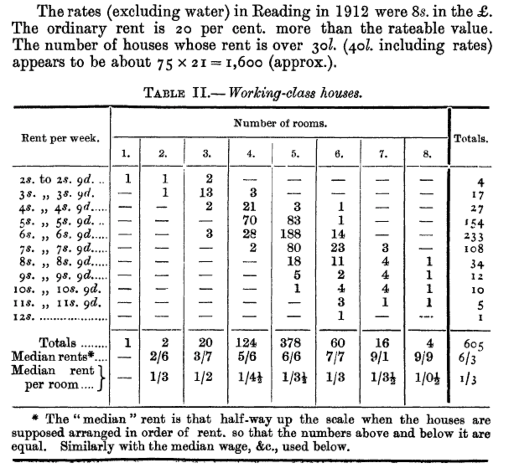
그런 다음, 인구 조사에서 리딩에 약 18,000가구가 있다고 판단한 후, (bowley1913working은?) 표본에 21의 승수를 적용하여 리딩 전체에 대한 추정치를 산출했습니다. 결과 추정치가 합리적임을 보장하는 핵심 측면은 표본 추출이 무작위 방식으로 수행되었다는 것입니다.\index{sampling!systematic} 이것이 (bowley1913working이?) 방문객들이 선택된 실제 집에 가고 다른 집으로 대체하지 않도록 그렇게 주장한 이유입니다.
6.4.2 확률적 표본 추출
목표 모집단과 표집 틀을 확인한 후에는 확률 표집과 비확률 표집을 구별해야 합니다.
- “확률 표집”: 표집 틀의 모든 단위는 표집될 확률이 알려져 있으며 특정 표본은 이러한 확률에 따라 무작위로 얻어집니다. 표집될 확률은 각 단위에 대해 동일할 필요는 없습니다.\index{sampling!probability}
- “비확률 표집”: 표집 틀의 단위는 편의, 할당, 판단 또는 기타 비무작위 프로세스를 기반으로 표집됩니다.\index{sampling!non-probability}
종종 확률 표집과 비확률 표집의 차이는 정도의 차이입니다. 예를 들어, 우리는 일반적으로 강제로 데이터를 얻을 수 없으므로 응답자 측에서 자원하는 측면이 거의 항상 있습니다. 많은 국가에서 인구 조사 양식을 작성하지 않으면 처벌이 있는 경우에도 정부조차도 사람들이 그것을 완전히 또는 진실하게 작성하도록 강요하기는 어렵습니다. 유명하게도 2001년 뉴질랜드 인구 조사에서는 인구의 1% 이상이 자신의 종교를 “제다이”로 기재했습니다(Taylor 2015). 확률 표집에서 명확히 해야 할 가장 중요한 측면은 불확실성의 역할입니다. 이를 통해 우리는 알려진 양의 오차로 표본을 기반으로 모집단에 대한 주장을 할 수 있습니다. 절충안은 확률 표집이 종종 비싸고 어렵다는 것입니다.
우리는 네 가지 유형의 확률 표집을 고려할 것입니다.
- 단순 무작위;
- 체계적;
- 층화; 그리고
- 군집.
우리의 논의에 좀 더 구체성을 더하기 위해, Lohr ([1999년] 2022, p. 27)에서도 사용되는 방식으로, 1부터 100까지의 숫자를 목표 모집단으로 간주하는 것이 도움이 될 수 있습니다. 단순 무작위 표집에서는 모든 단위가 포함될 확률이 동일합니다. 이 경우 20%라고 가정해 봅시다.\index{sampling!simple random} 이는 표본에 약 20개의 단위가 있을 것으로 예상하거나, 목표 모집단에 비해 5개 중 1개 정도가 될 것으로 예상한다는 의미입니다.
set.seed(853)
illustrative_sampling <- tibble(
unit = 1:100,
simple_random_sampling =
sample(x = c("In", "Out"),
size = 100,
replace = TRUE,
prob = c(0.2, 0.8))
)
illustrative_sampling |>
count(simple_random_sampling)# A tibble: 2 × 2
simple_random_sampling n
<chr> <int>
1 In 14
2 Out 86(bowley1913working에서?) 사용된 체계적 표집\index{sampling!systematic}에서는 어떤 값을 선택하여 진행하고, 그런 다음 20% 표본을 얻기 위해 5번째 단위마다 표본을 추출합니다. 시작하려면 1부터 5까지의 단위에서 무작위로 시작점을 선택합니다. 예를 들어 3이라고 합시다. 따라서 5번째 단위마다 표본을 추출한다는 것은 3번째, 8번째, 13번째 등을 살펴보는 것을 의미합니다.
set.seed(853)
starting_point <- sample(x = c(1:5), size = 1)
illustrative_sampling <-
illustrative_sampling |>
mutate(
systematic_sampling =
if_else(unit %in% seq.int(from = starting_point, to = 100, by = 5),
"In",
"Out"
)
)
illustrative_sampling |>
count(systematic_sampling)# A tibble: 2 × 2
systematic_sampling n
<chr> <int>
1 In 20
2 Out 80우리가 모집단을 고려할 때, 일반적으로 어떤 그룹화가 있을 것입니다. 이것은 국가가 주, 도, 군 또는 통계 구역을 갖는 것만큼 간단할 수 있습니다. 대학은 학부와 학과를 가지고 있고, 인간은 연령 그룹을 가지고 있습니다. 층화 구조는 모집단을 상호 배타적이고 총체적으로 완전한 하위 모집단인 “층”으로 나눌 수 있는 구조입니다.\index{sampling!stratified}
우리는 표본 추출의 효율성을 높이거나\index{efficiency!sampling} 설문 조사의 균형을 맞추기 위해 층화를 사용합니다. 예를 들어, 미국 인구는 약 3억 3,500만 명이며, 캘리포니아에는 약 4,000만 명, 와이오밍에는 약 50만 명이 있습니다. 10,000건의 응답으로 구성된 설문 조사조차도 와이오밍에서 15건의 응답만 기대할 수 있으므로 와이오밍에 대한 추론이 어려울 수 있습니다. 우리는 층화를 사용하여 각 주에서 200건의 응답이 있도록 보장할 수 있습니다. 각 주 내에서 무작위 표본 추출을 사용하여 데이터를 수집할 사람을 선택할 수 있습니다.
우리의 경우, 층이 10 단위라고 가정하여 그림을 층화할 것입니다. 즉, 1에서 10은 한 층, 11에서 20은 다른 층 등입니다. 우리는 이러한 층 내에서 단순 무작위 표본 추출을 사용하여 각각에서 두 단위를 선택할 것입니다.
set.seed(853)
picked_in_strata <-
illustrative_sampling |>
mutate(strata = (unit - 1) %/% 10) |>
slice_sample(n = 2, by = strata) |>
pull(unit)
illustrative_sampling <-
illustrative_sampling |>
mutate(stratified_sampling =
if_else(unit %in% picked_in_strata, "In", "Out"))
illustrative_sampling |>
count(stratified_sampling)# A tibble: 2 × 2
stratified_sampling n
<chr> <int>
1 In 20
2 Out 80그리고 마지막으로, 데이터셋에 존재할 수 있는 일부 군집을 활용할 수도 있습니다.\index{sampling!cluster} 층과 마찬가지로 군집은 총체적으로 완전하고 상호 배타적입니다. 주, 부서 및 연령 그룹의 이전 예는 군집으로서 유효합니다. 그러나 이러한 그룹에 대한 우리의 의도가 다릅니다. 구체적으로, 군집 표집에서는 모든 군집에서 데이터를 수집할 의도가 없지만, 층화 표집에서는 그렇습니다. 층화 표집에서는 모든 층을 살펴보고 각 층 내에서 단순 무작위 표집을 수행하여 표본을 선택합니다. 군집 표집에서는 관심 있는 군집을 선택합니다. 그런 다음 선택된 군집의 모든 단위를 표집하거나 선택된 군집 내에서 단순 무작위 표집을 사용하여 단위를 선택할 수 있습니다. 그렇긴 하지만, 이 차이는 특히 사후에 실제로 덜 명확해질 수 있습니다. (rose2006comparison은?) 2005년 수단 북다르푸르의 사망률 데이터를 수집합니다. 그들은 군집 표집과 체계적 표집 모두 유사한 결과를 제공하며, 체계적 표집은 설문 조사 팀의 훈련이 덜 필요하다고 지적합니다. 일반적으로 군집 표집은 지리적으로 가까운 위치에 초점을 맞추기 때문에 더 저렴할 수 있습니다.
우리의 경우, 10 단위에 따라 다시 그림을 군집화할 것입니다. 단순 무작위 표본 추출을 사용하여 전체 군집을 사용할 두 군집을 선택할 것입니다.
set.seed(853)
picked_clusters <-
sample(x = c(0:9), size = 2)
illustrative_sampling <-
illustrative_sampling |>
mutate(
cluster = (unit - 1) %/% 10,
cluster_sampling = if_else(cluster %in% picked_clusters, "In", "Out")
) |>
select(-cluster)
illustrative_sampling |>
count(cluster_sampling)# A tibble: 2 × 2
cluster_sampling n
<chr> <int>
1 In 20
2 Out 80이 시점에서 우리는 접근 방식 간의 차이점을 설명할 수 있습니다(그림 fig-samplingexamples). 또한 세계 여러 지역에서 다른 방법을 사용하여 무작위로 표본을 추출하는 것처럼 시각적으로 고려할 수도 있습니다(그림 fig-samplingexamplesworld).
new_labels <- c(
simple_random_sampling = "단순 무작위 표집",
systematic_sampling = "체계적 표집",
stratified_sampling = "층화 표집",
cluster_sampling = "군집 표집"
)
illustrative_sampling_long <-
illustrative_sampling |>
pivot_longer(
cols = names(new_labels), names_to = "sampling_method",
values_to = "in_sample"
) |>
mutate(sampling_method =
factor(sampling_method,levels = names(new_labels)))
illustrative_sampling_long |>
filter(in_sample == "In") |>
ggplot(aes(x = unit, y = in_sample)) +
geom_point() +
facet_wrap(vars(sampling_method), dir = "v", ncol = 1,
labeller = labeller(sampling_method = new_labels)
) +
theme_minimal() +
labs(x = "단위", y = "표본에 포함됨") +
theme(axis.text.y = element_blank())
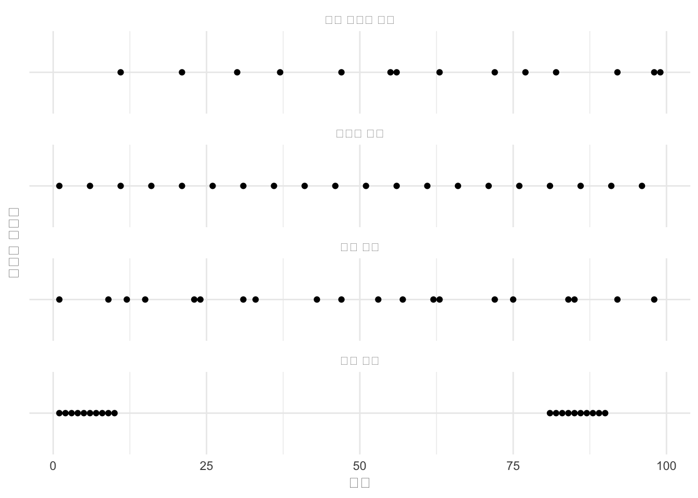
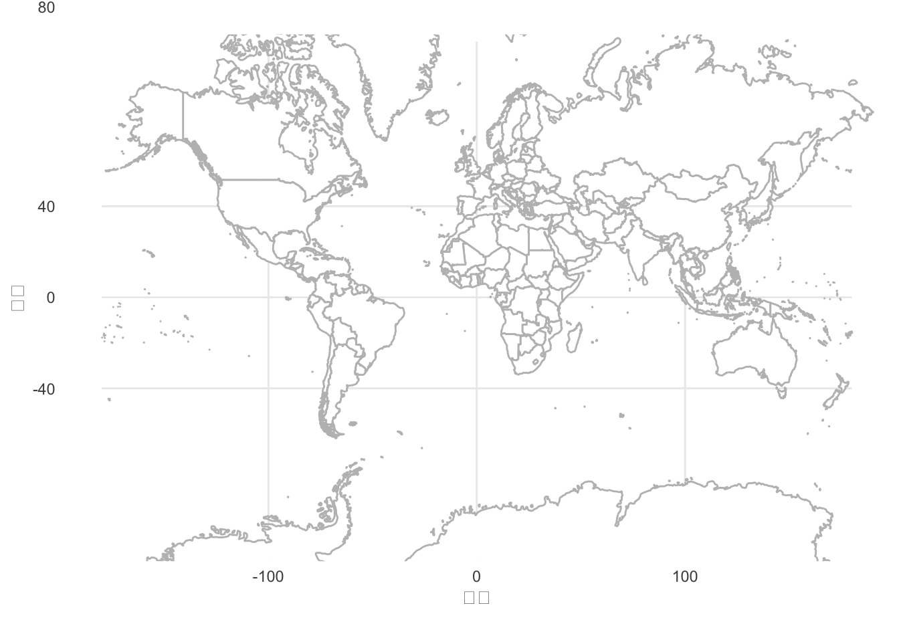
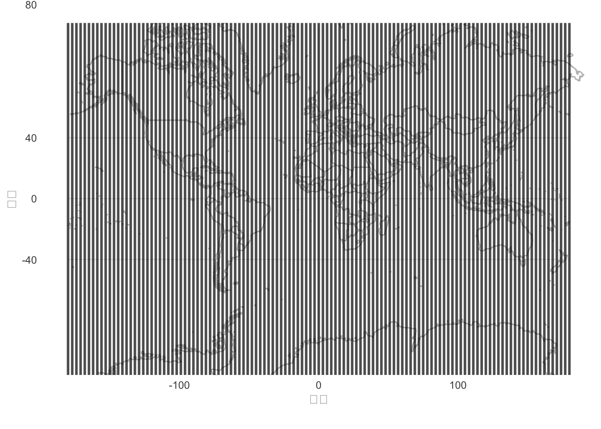
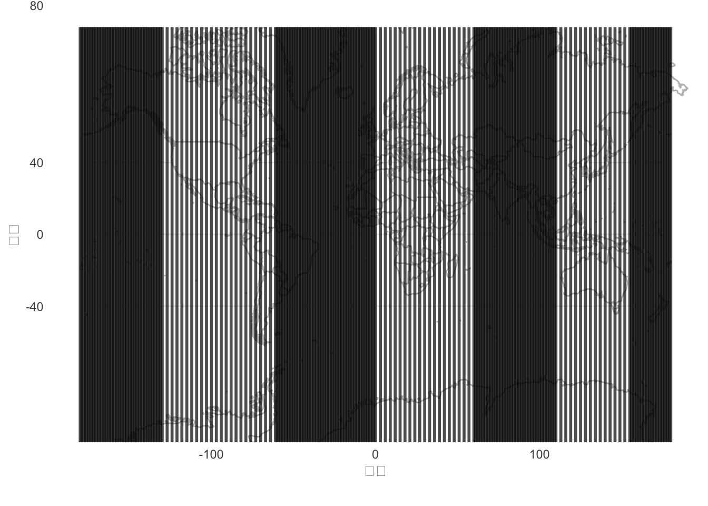
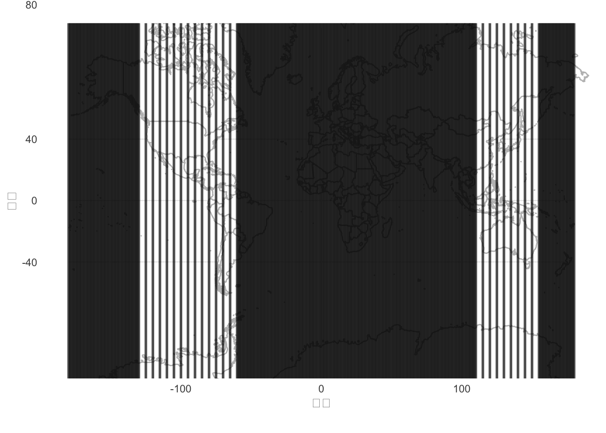
그림 fig-samplingexamples와 그림 fig-samplingexamplesworld는 다른 방법 간의 절충안과 그것들이 다르게 적절할 수 있는 방식을 보여줍니다.\index{sampling!trade-offs} 예를 들어, 체계적 표집이 그림 fig-samplingexamplesworld에서 세계의 유용한 그림을 제공하지만, 만약 우리가 예를 들어 육지에만 관심이 있다면, 여전히 유익하지 않은 많은 표본이 남을 것입니다. 층화 표집과 군집 표집은 관심 있는 측면에 집중할 수 있게 해주지만, 더 전체적인 그림을 희생해야 합니다.\index{maps!sampling}
이러한 접근 방식 간의 차이점을 이해하는 좋은 방법은 실제로 고려하는 것입니다. (thatrandyaupersonagain은?) 여러 가지 예를 제공합니다. 특히 맹금류를 세는 맥락에서 (raptors는?) 단순 무작위 표집, 층화 표집, 체계적 표집 및 군집 표집뿐만 아니라 추가적인 고려 사항을 비교합니다.
6.4.2.1 확률 표본에 대한 추론
표본을 확립한 후에는 일반적으로 이를 사용하여 모집단에 대한 주장을 하고자 합니다. Neyman (1934, p. 561)는 더 나아가 “대표 방법의 문제는 통계적 추정의 문제이다. 우리는 특정 모집단, 예를 들어 \(\pi\)의 특성에 관심이 있지만, 이를 자세히 연구하는 것은 불가능하거나 적어도 매우 어렵기 때문에 표본에 근거하여 이러한 특성을 추정하려고 노력한다”고 말합니다.\index{sampling!population}
특히, 우리는 일반적으로 모집단 평균과 분산을 추정하는 데 관심이 있을 것입니다. 우리는 sec-on-writing에서 추정량, 추정 대상 및 추정치에 대한 아이디어를 소개했습니다.\index{estimand}\index{estimator}\index{estimate} 우리는 모집단 평균과 분산을 추정하기 위해 추정량을 구성할 수 있습니다.\index{sampling!estimator} 예를 들어, 크기가 \(n\)인 표본으로 단순 무작위 표집을 사용하고 있다면, 표본 평균과 분산(sec-its-just-a-linear-model에서 다시 다룸)을 구성하여 모집단 평균과 분산의 추정치를 생성할 수 있습니다.
\[ \\begin{aligned} \\hat{\\mu} &= \\frac{1}{n} \\times \\sum_{i = 1}^{n}x_i\\\\ \\hat{\\sigma}^2 &= \\frac{1}{n-1} \\times \\sum_{i = 1}^{n}\\left(x_i - \\hat{\\mu}\\right)^2 \\end{aligned} \]
지금까지 사용한 접근 방식을 사용하여 다양한 유형의 설문 조사 설계를 시뮬레이션할 수 있습니다. DeclareDesign (Blair 기타 2019) 및 survey (Lumley 2020)를 포함하여 도움이 될 수 있는 패키지도 있습니다.
추정치를 확장하는 것은 표본의 수를 사용하여 목표 모집단의 총 수를 추론하는 데 관심이 있을 때 사용할 수 있습니다. 우리는 이것을 (bowley1913working에서?) 보았습니다. 여기서 표본의 가구 수와 인구 조사에서 알려진 가구 수의 비율은 21이었고 이 정보는 표본을 확장하는 데 사용되었습니다.
예를 들어, 1부터 100까지의 숫자 합에 관심이 있었다고 가정해 봅시다. 이 숫자들에서 표본을 추출하는 다양한 방법을 설명하는 예로 돌아가서, 우리는 표본 크기가 20이라는 것을 알고 있으므로 5배로 확장해야 합니다(표 tbl-scaleup).
| 표집 방법 | 표본 합계 | 암시된 모집단 합계 |
|---|---|---|
| 체계적 표집 | 970 | 4,850 |
| 층화 표집 | 979 | 4,895 |
| 군집 표집 | 910 | 4,550 |
| 단순 무작위 표집 | 840 | 4,200 |
모집단의 실제 합계는 5,050입니다.1 세부 사항은 이 표본에 고유하지만, 척도에 기반한 모집단 합계의 추정치는 드러납니다.\index{sampling!comparison} 가장 가까운 것은 층화 표본이며, 체계적 표집이 그 뒤를 잇습니다. 군집 표집은 10% 이상 차이가 나고, 단순 무작위 표집은 조금 더 멀리 떨어져 있습니다. 실제 합계에 가까워지려면 표집 방법이 가능한 한 높은 값을 많이 얻는 것이 중요합니다. 따라서 더 큰 숫자에서 결과를 보장한 층화 표집과 체계적 표집이 특히 잘 수행되었습니다. 군집 표집과 단순 무작위 표집의 성능은 선택된 특정 군집과 단위에 따라 달라집니다. 이 경우 층화 표집과 체계적 표집은 모집단 합계의 추정치가 실제 모집단 합계에서 너무 멀리 떨어져 있지 않도록 보장했습니다. 여기서 우리는 GDP 및 합산되는 기타 구성과 같은 측정의 구성 및 평가에 대한 함의와 크기에 따른 다른 층의 총계에 대한 영향을 생각할 수 있습니다.
이 접근 방식은 오랜 역사를 가지고 있습니다. 예를 들어, Stigler (1986, p. 163)는 1826년까지 19세기 천문학자인 아돌프 케틀레\index{Quetelet, Adolphe}가 인구 조사를 계획하고 있던 통계국에 관여하게 되었다고 설명합니다. 케틀레는 출생과 사망은 잘 알려져 있지만 이주는 그렇지 않다고 주장했습니다. 그는 특정 지역의 수를 기반으로 한 접근 방식을 제안했으며, 이를 전국으로 확장할 수 있었습니다. 계획에 대한 비판은 적절한 지역을 선택하는 어려움에 초점을 맞추었으며, 이는 군집 표집의 예에서도 볼 수 있었습니다. 비판은 합리적이었고, 오늘날에도 약 200년이 지난 지금도 우리가 염두에 두어야 할 것입니다(Stigler 1986):
그[케틀레]는 자신이 측정하고자 하는 양에 영향을 미칠 수 있는 무한한 수의 요인을 예리하게 인식하고 있었고, 어떤 것이 실제로 중요한지 알려줄 정보가 부족했습니다. 그는… 동질적이라고 믿을 이유가 없는 데이터를 동질적으로 그룹화하는 것을 꺼렸습니다… 어떤 것이 진정으로 중요하고 그 효과가 어떻게 느껴질 수 있는지 알지 못한 채 무수한 잠재적으로 중요한 요인을 인식하는 것은 종종 최악을 두려워하는 것입니다… 그[케틀레]는 넓은 지역을 동질적으로 취급할 수 없었고, [그래서] 단일 비율이 넓은 지역에 적용된다고 생각할 수 없었습니다.
모집단 총계를 알 때 이러한 확장을 할 수 있지만, 그것을 모르거나 그 접근 방식의 정밀도에 대한 우려가 있는 경우 비율 추정량을 사용할 수 있습니다.
비율 추정량\index{estimator!ratio}은 1802년 피에르-시몽 라플라스가 프랑스의 총인구를 추정하는 데 사용되었습니다. 이는 전국적으로 알려진 등록된 출생아 수와 특정 코뮌에서만 알려진 주민 수의 비율을 기반으로 했습니다.\index{France!1802 estimated population} 그는 세 코뮌에 대해 이 비율을 계산한 다음, 전국 출생아 수를 알고 있는 것을 기반으로 프랑스 인구의 추정치를 산출하기 위해 확장했습니다(Lohr [1999년] 2022).
어떤 모집단 모수의 비율 추정량은 두 평균의 비율입니다.\index{estimator!ratio} 예를 들어, 30일 동안 유아가 잠을 잔 총 시간을 알고 있고, 같은 기간 동안 부모가 잠을 잔 시간을 알고 싶다고 상상해 봅시다. 우리는 30일 동안 유아가 밤에 잠을 자는 시간, \(x\), 그리고 부모가 밤에 잠을 자는 시간, \(y\)에 대한 일부 정보를 가지고 있을 수 있습니다.\index{simulation!toddler sleep}
set.seed(853)
sleep <-
tibble(
toddler_sleep = sample(x = c(2:14), size = 30, replace = TRUE),
difference = sample(x = c(0:3), size = 30, replace = TRUE),
parent_sleep = toddler_sleep - difference
) |>
select(toddler_sleep, parent_sleep, difference)
sleep# A tibble: 30 × 3
toddler_sleep parent_sleep difference
<int> <int> <int>
1 10 9 1
2 11 11 0
3 14 12 2
4 2 0 2
5 6 5 1
6 14 12 2
7 3 3 0
8 5 3 2
9 4 1 3
10 4 3 1
# ℹ 20 more rows각각의 평균은 다릅니다(표 tbl-averagesleepestimate).
| 유아 수면 평균 | 부모 수면 평균 |
|---|---|
| 6.17 | 4.9 |
부모가 유아에 비해 잠을 자는 비율은 다음과 같습니다.
\[\\hat{B} = \\frac{\\bar{y}}{\\bar{x}} = \\frac{4.9}{6.17} \\approx 0.8.\]
유아가 30일 동안 185시간을 잤다는 점을 감안할 때, 부모가 잔 시간의 추정치는 \(185 \\times 0.8 = 148\)입니다. 이것은 합계가 147이므로 거의 정확한 것으로 나타났습니다. 이 예에서는 데이터를 합산할 수 있었기 때문에 추정이 필요하지 않았지만, 다른 부모 집단이 유아가 잔 시간만 기록하고 자신이 얼마나 잤는지는 기록하지 않았다면, 이것을 사용하여 그들이 얼마나 잤는지 추정할 수 있습니다.
일반적으로 사용되는 비율 추정량의 한 가지 변형은 포획-재포획으로, 데이터 수집의 최고 보석 중 하나입니다.\index{sampling!capture and recapture} 이것은 우리가 모든 동물에 대한 데이터를 결코 수집할 수 없다는 것을 아는 생태학에서 일반적으로 사용됩니다.\index{ecology} 대신, 표본을 포획하고, 표시하고, 방출합니다. 연구자들은 일정 시간이 지난 후 다른 표본을 포획하기 위해 돌아옵니다. 처음에 포획된 동물이 모집단에 다시 통합될 충분한 시간이 지났지만, 출생, 사망 및 이주에 대한 극복할 수 없는 우려가 있을 만큼 많은 시간이 지나지 않았다고 가정하면, 이러한 값을 사용하여 모집단 크기를 추정할 수 있습니다. 핵심은 이 두 번째 표본에서 재포획된 비율입니다. 이 비율은 전체 모집단의 크기를 추정하는 데 사용할 수 있습니다. 흥미롭게도 1990년대에는 방법론에 대한 우려로 인해 1990년 미국 인구 조사를 조정하기 위해 포획-재포획 모델을 사용할지 여부에 대한 상당한 논쟁이 있었습니다. (Breiman1994와?) (newwoyktimesgleickcensus의?) 조합은 당시의 우려, 더 일반적으로 인구 조사의 우려, 그리고 포획-재포획 방법에 대한 유용한 배경에 대한 개요를 제공합니다. 더 최근에는 sec-gather-data에서 고려하는 웹 스크래핑과 결합된 포획-재포획을 설문 조사 프레임 구성에 사용하는 것을 보았습니다(Hyman, Sartore, 와/과 Young 2021).
6.4.3 비확률 표본
스펙트럼이라는 점을 인정하면서도, 통계학의 많은 부분은 확률 표집을 기반으로 개발되었습니다. 그러나 현대 표집의 상당 부분은 비확률 표집을 사용하여 수행됩니다.\index{sampling!non-probability} 한 가지 접근 방식은 소셜 미디어 및 기타 광고를 사용하여 응답자 패널을 모집하고, 보상을 대가로 할 수도 있습니다. 이 패널은 필요에 따라 다양한 설문 조사를 받는 그룹이 됩니다. 그러나 이것의 함의에 대해 잠시 생각해 보십시오. 예를 들어, 어떤 유형의 사람들이 그러한 광고에 응답할 가능성이 높을까요? 세계에서 가장 부유한 사람이 응답할 가능성이 있을까요? 특히 젊거나 특히 나이가 많은 사람들이 응답할 가능성이 있을까요? 어떤 경우에는 인구 조사를 할 수 있습니다. 정부는 일반적으로 5년에서 10년마다 한 번씩 합니다. 그러나 일반적으로 정부가 하는 데에는 이유가 있습니다. 비싸고, 시간이 많이 걸리고, 놀랍게도, 그들이 얼마나 일반적이어야 하는지 때문에 우리가 희망하는 만큼 정확하지 않을 때가 있습니다.
비확률 표본은 일반적으로 확률 표본보다 저렴하고 빠르게 얻을 수 있기 때문에 중요한 역할을 합니다.\index{sampling!non-probability} (beaumont2020probability는?) 확률 표본에 대한 응답률 감소 및 실시간 통계에 대한 수요 증가를 포함하여 비확률 표본에 유리한 다양한 요인을 설명합니다. 또한, 우리가 논의했듯이 확률 표본과 비확률 표본의 차이는 때때로 이분법보다는 정도의 차이입니다. 비확률 표본은 절충안에 대해 명확하고 투명성을 보장하는 한 일부 작업에 합법적이고 적절합니다(Baker 기타 2013). 낮은 응답률은 진정한 확률 표본이 드물다는 것을 의미하므로 비확률 표집의 함의를 다루는 것이 중요합니다.
편의 표집은 접근하기 쉬운 표본에서 데이터를 수집하는 것을 포함합니다.\index{sampling!convenience} 예를 들어, 대규모 배포 전에 설문 조사를 테스트하는 방법으로 친구나 가족에게 설문 조사를 작성해 달라고 자주 요청합니다. 이러한 표본을 분석한다면 편의 표집을 사용하고 있을 가능성이 높습니다.
편의 표집의 주요 관심사는 더 넓은 모집단에 대해 말할 수 있는지 여부입니다. 또한 까다로운 윤리적 고려 사항이 있으며, 일반적으로 익명성이 부족하여 결과를 더욱 편향시킬 수 있습니다.\index{ethics!convenience sampling} 반면에 상황을 빠르고 저렴하게 파악하는 데 유용할 수 있습니다.
할당 표집은 층이 있지만 해당 층 내에서 단위를 선택하기 위해 무작위 표집을 사용하지 않을 때 발생합니다.\index{sampling!quota} 예를 들어, 미국을 주별로 다시 층화했지만 와이오밍의 모든 사람이 해당 층에 선택될 기회를 보장하는 대신 잭슨 홀에서 사람들을 그냥 선택했다면 말입니다. 이 접근 방식에는 특히 속도와 비용 측면에서 몇 가지 장점이 있지만 결과 표본은 다양한 방식으로 편향될 수 있습니다. 그렇다고 해서 장점이 없는 것은 아닙니다. 예를 들어, 캐나다 은행은 상품 및 서비스 지불 방법에 초점을 맞춘 비확률 설문 조사를 실시합니다.\index{Canada!Bank of Canada} 그들은 할당 표집과 다양한 조정 방법을 사용합니다. 이러한 비확률 표집의 사용은 그들이 도달하기 어려운 인구의 측면에 의도적으로 집중할 수 있게 해줍니다(H. Chen, Felt, 와/과 Henry 2018).
속담처럼, 같은 깃털의 새는 함께 모입니다. 그리고 우리는 표본 추출에서 그것을 활용할 수 있습니다. (handcock2011comment가?) 이전에 다양한 용도를 설명하고 다학문적 작업에서 귀속을 정의하기가 악명 높게 어렵지만, 눈덩이 표집은 (goodman1961snowball에?) 의해 잘 정의됩니다.\index{sampling!snowball} (goodman1961snowball에?) 따라 눈덩이 표집을 수행하려면 먼저 표집 틀에서 무작위 표본을 추출합니다. 이들 각각에게 표본 모집단에 있지만 초기 추출에는 없는 다른 \(k\)명을 지명하도록 요청하고, 이들이 “1단계”를 형성합니다. 1단계의 각 개인은 유사하게 표본 모집단에 있지만 무작위 추출이나 1단계에는 없는 다른 \(k\)명을 지명하도록 요청받고, 이들이 “2단계”를 형성합니다. 우리는 단계 수 \(s\)와 \(k\)를 미리 지정해야 합니다.
응답자 주도 표집은 (heckathorn1997respondent에?) 의해 숨겨진 모집단에 초점을 맞추기 위해 개발되었으며, 여기서 숨겨진 모집단은 다음과 같습니다.\index{sampling!respondent-driven}
- 표집 틀이 없습니다. 그리고
- 표집 모집단에 있는 것으로 알려지는 것이 부정적인 영향을 미칠 수 있습니다.
예를 들어, 게이 인구나 낙태를 한 사람들로부터 표본을 추출하기 어려운 여러 국가를 상상할 수 있습니다. 응답자 주도 표집은 눈덩이 표집과 두 가지 면에서 다릅니다.
- 눈덩이 표집의 경우와 마찬가지로 자신의 응답에 대한 보상 외에도, 응답자 주도 표집은 일반적으로 다른 사람을 모집하는 데 대한 보상도 포함합니다.
- 응답자는 다른 사람에 대한 정보를 조사관에게 제공하도록 요청받는 것이 아니라, 연구에 그들을 모집합니다. 표본으로의 선택은 표집 틀에서가 아니라, 이미 표본에 있는 사람들의 네트워크에서 발생합니다(Salganik 와/과 Heckathorn 2004).
6.5 연습 문제
연습
- (계획) 다음 시나리오를 고려하십시오: 1년 동안 매일 두 사람, 마크와 로렌은 그들이 출신인 두 다른 주에서 그날 내린 눈의 양을 기록합니다. 데이터셋이 어떻게 생겼을지 스케치한 다음, 모든 관측치를 보여주기 위해 만들 수 있는 그래프를 스케치하십시오.
- (시뮬레이션) 설명된 시나리오를 더 고려하고 모든 변수가 서로 독립적인 상황을 시뮬레이션하십시오. 그런 다음 시뮬레이션된 데이터를 기반으로 5개의 테스트를 작성하십시오.
- (수집) 강설량에 대한 실제 데이터를 얻고 시뮬레이션된 테스트를 이 실제 데이터로 업데이트하는 스크립트를 추가하십시오.
- (탐색) 실제 데이터를 사용하여 그래프와 표를 만드십시오.
- (소통) 그래프와 표를 동반할 텍스트를 작성하십시오. 코드를
R파일과 Quarto 문서로 적절하게 분리하십시오. 고품질 GitHub 리포지토리 링크를 제출하십시오.
퀴즈
- 세상의 어떤 현상을 데이터셋으로 변환할 때 어려운 점은 무엇입니까 (하나 선택)?
- 데이터 저장 솔루션의 높은 비용.
- 편향되지 않은 데이터의 과잉.
- 사용 가능한 데이터 수집 도구의 부족.
- 무엇을 측정하고 어떻게 적절하게 측정할지 결정하는 것.
- (statsoftheworld를?) 참조하여 GDP와 인구 수가 발명된 것인지 발견된 것인지 논의하십시오.
- 계측학에 따르면, 다음 중 측정을 가장 잘 정의하는 것은 무엇입니까 (하나 선택)?
- 예측 모델을 사용한 미지 변수 추정.
- 데이터 분석에서 통계적 유의성 계산.
- 객체에 임의로 숫자를 할당하는 행위.
- 현상, 신체 또는 물질의 속성에 귀속될 수 있는 양 값을 실험적으로 얻는 과정.
- 최소 두 단락으로, 자신의 말로 측정 오차를 정의하고 자신의 경험에서 예를 들어 설명하십시오.
- (Gargiulo2022를?) 참조하여 실제 세계에서 측정의 어려움에 대해 논의하십시오.
- 측정의 타당성은 무엇을 의미합니까 (하나 선택)?
- 측정 결과의 통계적 유의성.
- 측정이 측정하려는 개념을 얼마나 정확하게 반영하는지의 정도.
- 데이터를 수집할 수 있는 속도.
- 측정을 복제할 수 있는 정밀도.
- (kennedy2020using은?) 윤리를 어떻게 정의합니까 (하나 선택)?
- 개별 설문 조사 응답자의 관점과 존엄성을 존중하는 것.
- 일반 인구 및 관심 있는 하위 인구에 대한 추정치를 생성하는 것.
- 유용한 기능을 제공할 때만 더 복잡한 절차를 사용하는 것.
- 다음 중 측정 오차를 가장 잘 설명하는 것은 무엇입니까 (하나 선택)?
- 관찰된 값과 측정되는 것의 실제 값 사이의 차이.
- 데이터가 정규 분포가 아닐 때만 발생하는 오류.
- 더 나은 기기로 제거할 수 있는 오류 유형.
- 분석을 오도하기 위한 데이터의 의도적인 변경.
- 검열된 데이터란 무엇입니까 (하나 선택)?
- 손상되어 읽을 수 없는 데이터.
- 개인 정보 보호 문제로 인해 의도적으로 생략된 데이터.
- 관측 값이 부분적으로만 알려진 데이터.
- 승인되지 않은 출처에서 수집된 데이터.
- 절단된 데이터는 검열된 데이터와 어떻게 다릅니까 (하나 선택)?
- 절단된 데이터는 과대평가를 다루고, 검열된 데이터는 과소평가를 다룹니다.
- 절단된 데이터에서는 특정 값이 데이터셋에서 생략되는 반면, 검열된 데이터에서는 값이 부분적으로 알려져 있지만 불완전합니다.
- 절단된 데이터는 검열된 데이터보다 덜 정확합니다.
- 완전히 무작위로 결측(MCAR)이란 무엇을 의미합니까 (하나 선택)?
- 통계 모델을 사용하여 쉽게 예측할 수 있는 결측 데이터.
- 결측될 가능성이 관찰되지 않은 데이터와 관련된 결측 데이터.
- 결측될 가능성이 관찰된 데이터와 관련된 결측 데이터.
- 결측이 관찰되거나 관찰되지 않은 데이터와 전혀 관련이 없는 완전히 무작위인 결측 데이터.
- 인구 조사가 중요한 데이터셋으로 간주되는 이유는 무엇입니까 (하나 선택)?
- 드물게 수행되므로 새로운 정보가 있습니다.
- 모집단의 모든 단위에 대한 데이터를 수집하여 분석을 위해 설계된 포괄적인 데이터셋을 제공하는 것을 목표로 합니다.
- 독점적인 통찰력을 제공하는 비공개 데이터셋입니다.
- 경제 계획에 필수적인 농업 데이터에만 초점을 맞춥니다.
- (statcanhistory에서?) 인구 조사 데이터의 품질이 평가되는 이유는 무엇입니까 (하나 선택)?
- 미래 인구 조사의 비용을 줄이기 위해.
- 데이터 보급을 제한하기 위해.
- 데이터 개인 정보 보호를 개선하기 위해.
- 인구 조사 데이터가 신뢰할 수 있고 사용자 요구를 충족하는지 확인하기 위해.
- (statcanhistory에서?) 표본 추출 오차의 주요 원인은 무엇입니까 (하나 선택)?
- 개인의 무응답.
- 모집단이 아닌 표본 사용.
- 처리 중 데이터 캡처 오류.
- 주거지 오분류.
- (statcanhistory에서?) 사람이나 주거지가 누락되거나 두 번 이상 계산될 때 발생하는 오류는 무엇입니까 (하나 선택)?
- 무응답 오류.
- 포괄 범위 오류.
- 표본 추출 오류.
- 처리 오류.
- (statcanhistory에서?) 응답자나 조사원의 오해나 오보와 관련된 오류 유형은 무엇입니까 (하나 선택)?
- 표본 추출 오류.
- 응답 오류.
- 처리 오류.
- 포괄 범위 오류.
- (statcanhistory에서?) 주거지 분류 조사(DCS)의 목적은 무엇입니까 (하나 선택)?
- 장기 설문지를 개선하기 위해.
- 새로운 주택 개발을 분류하기 위해.
- 가구 소득에 대한 데이터를 수집하기 위해.
- 주거지의 분류 오류를 연구하기 위해.
- (statcanhistory에서?) 인구 조사 과소 집계 연구(CUS)는 무엇을 추정하도록 설계되었습니까 (하나 선택)?
- 인구 조사에서 누락된 사람의 수.
- 표본 추출 오차의 분산.
- 결측 데이터에 대한 대체율.
- 장기 설문지에 대한 무응답률.
- (statcanhistory에서?) 인구 조사 과대 집계 연구(COS)는 무엇을 식별합니까 (하나 선택)?
- 잘못 분류된 주거지.
- 개인이 두 번 이상 계산된 경우.
- 인구 조사에서 누락된 사람들.
- 처리 중 잘못된 데이터 입력.
- (statcanhistory에서?) 인구 조사의 총 무응답(TNR)률은 어떻게 정의됩니까 (하나 선택)?
- 인구 조사 데이터의 대체된 값의 수.
- 인구 조사의 부정확한 응답 비율.
- 부분 응답이 있는 설문지의 비율.
- 설문지가 최소 내용을 충족하지 않는 주거지의 비율.
- W. Chen 기타 (2019) 및 (martinez2019much를?) 참조하여 정부 통계를 어느 정도 신뢰할 수 있다고 생각하십니까? 최소 한 페이지를 작성하고 답변에서 최소 두 정부를 비교하십시오.
- 2021년 캐나다 인구 조사는 먼저 “이 사람의 출생 시 성별은 무엇이었습니까? 성별은 출생 시 지정된 성별을 의미합니다. 남성/여성”이라고 물었고, 그런 다음 “이 사람의 성별은 무엇입니까? 현재 성별을 의미하며 출생 시 지정된 성별과 다를 수 있으며 법적 문서에 표시된 것과 다를 수 있습니다. 남성/여성/또는 이 사람의 성별을 구체적으로 기재하십시오(타이핑 또는 손으로 쓴 답변을 위한 공간)”. (statcan2020을?) 참조하여 이것이 인구 조사가 진행하기에 적절한 방법이라고 생각하는 정도를 논의하십시오. 더 익숙하다면 다른 국가의 경우를 논의해도 좋습니다.
- IPUMS를 사용하여 2020 ACS에 액세스하십시오. 코드북을 사용하여 캘리포니아(STATEICP)에서 박사 학위를 최고 학력(EDUC)으로 가진 응답자는 몇 명이었습니까 (하나 선택)?
- 2,007
- 732
- 5,765
- 4,684
- IPUMS를 사용하여 1940년 1% 표본에 액세스하십시오. 코드북을 사용하여 캘리포니아(STATEICP)에서 최고 학력(EDUC)으로 5년 이상의 대학 교육을 받은 응답자는 몇 명이었습니까 (하나 선택)?
- 532
- 1,056
- 904
- 1,789
- (Dean2024를?) 참조하여 확률 표집과 비확률 표집의 차이점을 논의하십시오.
- 목표 모집단이란 무엇입니까 (하나 선택)?
- 우리가 결론을 내리고자 하는 전체 그룹.
- 표본을 추출할 수 있는 목표 모집단의 모든 단위 목록.
- 표본 추출을 위해 쉽게 접근할 수 있는 모집단의 하위 집합.
- 연구 참여에 동의한 개인 목록.
- 표집 틀이란 무엇입니까 (하나 선택)?
- 응답자로부터 데이터를 수집하는 데 사용되는 방법.
- 표본을 추출할 수 있는 목표 모집단의 모든 단위 목록.
- 데이터 수집이 발생하는 기간.
- 연구자가 결론을 내리고자 하는 전체 그룹.
- 확률 표집과 비확률 표집의 차이점은 무엇입니까 (하나 선택)?
- 확률 표집에는 표집 틀이 필요하지 않습니다.
- 확률 표집은 항상 비확률 표집보다 비용 효율적입니다.
- 확률 표집에서는 모든 단위가 선택될 확률이 알려져 있는 반면, 비확률 표집에서는 선택이 확률에 기반하지 않습니다.
- 비확률 표집 방법은 확률 표집 방법보다 더 정확합니다.
- (beaumont2020probability를?) 참조하여 확률 조사가 사라질 것이라고 생각하십니까? 그리고 그 이유는 무엇입니까 (한두 단락으로 작성하십시오)?
- 표집 틀의 모든 관측치가 선택될 확률이 동일하도록 단위를 선택하는 표집 방법은 무엇입까 (하나 선택)?
- 체계적 표집.
- 층화 표집.
- 단순 무작위 표집.
- 군집 표집.
- 첫 번째 단위는 무작위로 선택되고 후속 단위는 일정한 간격으로 선택되는 표집 방법은 무엇입니까 (하나 선택)?
- 체계적 표집.
- 편의 표집.
- 층화 표집.
- 군집 표집.
- 층화 표집의 특징은 무엇입니까 (하나 선택)?
- 모집단을 하위 그룹으로 나누고 각 하위 그룹에서 무작위 표본을 추출합니다.
- 참가자는 네트워크를 통해 다른 참가자를 모집합니다.
- 전체 군집이 무작위로 선택되고 그 안의 모든 단위가 표집됩니다.
- 전체 그룹 또는 군집을 무작위로 선택한 다음 그 안의 모든 또는 일부 단위를 표집합니다.
- 군집 표집에서 단위는 어떻게 선택됩니까 (하나 선택)?
- 모집단을 하위 그룹으로 나누고 각 하위 그룹에서 무작위 표본을 추출합니다.
- 전체 그룹 또는 군집을 무작위로 선택한 다음 그 안의 모든 또는 일부 단위를 표집합니다.
- 목록에서 n번째 단위를 선택합니다.
- 특정 할당량을 기준으로 단위를 선택합니다.
- 군집 표집을 사용하려는 몇 가지 이유를 들어보십시오 (해당하는 모든 것을 선택하십시오)?
- 하위 모집단 측면에서 응답의 균형.
- 관리상의 편의.
- 비용 측면에서의 효율성.
- 정수 [1:100]을 고려하십시오. 단 10개의 표본을 기반으로 중앙값을 추정하기 위해 표집 접근 방식을 구현하는 데 관심이 있다면 어떤 접근 방식을 선택하시겠습니까 (하나 선택)?
- 단순 무작위 표집.
- 체계적 표집.
- 군집 표집.
- 층화 표집.
- 1부터 100까지의 숫자를 고려하고 20개 숫자의 군집 표본을 기반으로 평균을 추정하는
R코드를 작성하십시오. 이 코드를 100번 다시 실행하고 매번 평균의 추정치를 기록한 다음 히스토그램을 그리십시오. 그래프에 대해 무엇을 알 수 있습니까? 설명과 토론의 단락을 추가하십시오. - (bowley1913working에서?) 리딩 가구 연구를 위한 표본은 어떻게 선택되었습니까 (하나 선택)?
- 거리의 무작위 선택에 의해.
- 소득에 따라 가구를 선택하여.
- 지역 디렉토리에서 10개 건물 중 하나를 표시하여.
- 5번째 가구마다 인터뷰하여.
- (bowley1913working에서?) 사용된 표집 접근 방식은 무엇입니까 (하나 선택)?
- 군집 표집.
- 단순 무작위 표집.
- 층화 표집.
- 체계적 표집.
- (bowley1913working에서?) 표본 데이터를 기반으로 리딩 전체에 대한 추정치를 제공하기 위해 사용된 방법은 무엇입니까 (하나 선택)?
- 비례 인구 조사 데이터 사용.
- 중간 소득 수준 계산.
- 승수 적용.
- (bowley1913working에서?) 리딩의 노동자 계층 가구로부터 임대료 및 소득 데이터를 수집하는 방법은 무엇이었습니까 (하나 선택)?
- 집주인 인터뷰를 통해.
- 인구 조사 기록을 검사하여.
- 세금 기록에서 데이터를 수집하여.
- 가구와의 자원 봉사 인터뷰를 통해.
- Bowley (1913, p. 673)의 다음 진술에 대해 논의하십시오. “표집 과정에 익숙하지 않은 사람들에게는 21분의 1의 비율이 어떤 결론을 내리기에는 너무 작고, 어떤 경우에도 막연한 확률 이상을 얻을 수 없다고 생각될 수 있습니다. … [그러나] 표본의 정밀도는 전체에 대한 비율이 아니라, 무작위 표집의 조건이 확보된다면, 이 조사에서 그랬다고 믿어지는 것처럼, 자체의 크기에 달려 있습니다.”
- (neyman1934two에서?) 층화 표집의 주요 목표는 무엇입니까 (하나 선택)?
- 무작위화의 필요성을 줄이기 위해.
- 모집단의 모든 층이 대표되도록 보장하기 위해.
- 표본 선택의 편향을 증가시키기 위해.
- (neyman1934two의?) 주요 초점은 무엇이었습니까 (하나 선택)?
- 단순 무작위 표본의 도입.
- 할당 표집 기법의 개발.
- 표본 선택의 모든 편향 제거.
- 층화 표집과 비확률 표집의 구별.
- (neyman1934two에서?) 단순 무작위 표집에 비해 층화 표집의 한 가지 장점은 무엇입니까 (하나 선택)?
- 표집 틀이 필요하지 않습니다.
- 더 적은 표본이 필요합니다.
- 더 저렴합니다.
- 추정치의 정밀도를 높일 수 있습니다.
- Neyman (1934, 섹션 V)에서 모집단의 속성에 관계없이 모집단의 평균 집단적 특성에 대한 일관된 추정치를 허용하는 접근 방식은 무엇입니까 (하나 선택)?
- 무작위 표집.
- 의도적 표집.
- 다음 중 편의 표집을 가장 잘 설명하는 것은 무엇입니까 (하나 선택)?
- 모든 하위 그룹이 비례적으로 대표되도록 보장하는 표집.
- 무작위 숫자를 기반으로 참가자를 선택하는 것.
- 가장 접근하기 쉬운 참가자를 선택하는 것.
- 알고리즘을 사용하여 표본을 선택하는 것.
- 눈덩이 표집은 일반적으로 무엇에 사용됩니까 (하나 선택)?
- 포괄적인 표집 틀을 가진 잘 정의된 모집단을 연구하는 것.
- 기존 참가자가 미래 참가자를 모집하여 숨겨지거나 접근하기 어려운 모집단을 연구하는 것.
- 다른 인구 통계학적 그룹에 걸쳐 동등한 대표성을 보장하는 것.
- 포획-재포획 방법을 사용하여 총 모집단 크기를 추정하는 것.
- 응답자 주도 표집이란 무엇입니까 (하나 선택)?
- 자동화된 시스템을 사용하여 응답자를 선택하는 표집 기법.
- 응답자가 다른 응답자를 추천하는 비확률 표집의 한 형태로, 종종 숨겨진 모집단에 사용되며 모집에 대한 인센티브를 포함합니다.
- 응답자가 확률 메커니즘에 따라 선택되는 무작위 표집 유형.
- 모집 노력 없이 자원하는 응답자에 의존하는 표집 방법.
- 캐나다의 모든 사람을 대상으로 연령, 생물학적 성별, 사회적 성별을 묻는 설문 조사를 실시했다고 가정해 봅시다. 친구가 “전체 인구를 가지고 있으므로 불확실성에 대해 걱할 필요가 없다”고 주장합니다. 친구가 맞습니까, 틀립니까? 그리고 그 이유는 무엇입니까?
- (meng2018statistical을?) 참조하여 “백만 개의 응답이 있으면 무작위화에 대해 걱할 필요가 없다”는 주장에 대해 논의하십시오.
- 은행에 취직했는데 이미 사용할 데이터셋이 있다고 상상해 보십시오. 해당 데이터가 유용할지 결정할 때 탐색해야 할 몇 가지 질문은 무엇입니까?
수업 활동
usethis::git_vaccinate()는 무엇을 합니까?- sec-r-essentials의 아미아 스리니바산의 인용문을 되돌아보고, 지능 측정과 관련하여 논의하십시오.
- 시뮬레이션할 때
set.seed()를 사용하는 것이 왜 중요합니까? - 행복 측정이 어느 정도 타당한지 논의하고, 논의의 일부로 용어를 정의하십시오.
- 아름다움 측정이 어느 정도 신뢰할 수 있는지 논의하고, 논의의 일부로 용어를 정의하십시오.
- A국의 B국으로부터의 특정 상품 수입 측정치가 B국의 A국으로의 동일 상품 수출 측정치와 같지 않을 수 있는 이유는 무엇입니까? 이것이 의문을 제기하게 만드는 다른 측정에 대해 자세히 논의하십시오.
- 결측 데이터와 관련하여 표 tbl-bandmembers에 대해 논의하십시오.
| 밴드 | 사람 | 출생 연도 |
|---|---|---|
| Beatles | Ringo Starr | 1940 |
| Beatles | John Lennon | 1940 |
| Beatles | George Harrison | NA |
| Spice Girls | Victoria Beckham | 1975 |
| Spice Girls | Mel B | 1975 |
| Spice Girls | NA | 1976 |
| NA | Mel C | 1974 |
| Girls' Generation | Taeyeon | 1989 |
| Girls' Generation | Sunny | 1989 |
| Girls' Generation | NA | NA |
| Girls' Generation | Hyoyeon | NA |
| Girls' Generation | Yuri | 1989 |
| Girls' Generation | Sooyoung | 1990 |
| Girls' Generation | Yoona | 1990 |
| Girls' Generation | NA | 1991 |
- 올 소울스 칼리지의 펠로우인 캐서린 런델이 “해방”이라는 단어가 존 던에서 유래했는지에 대한 질문에 대한 답변과 관련하여 표본 추출 편향에 대해 논의하십시오.
그렇습니다. 물론, OED가 항상 정전 작가에서 첫 사용을 발견했다는 경고를 제공하지 않는 것은 제게 잘못된 일이라고 생각합니다. 부분적으로는 그들이 불에서 살아남은 사람들이기 때문입니다. 그래서 물론, 그는 발명가가 아니라 일반적인 용어로 단어를 기록했을 수도 있습니다.
캐서린 런델 (Cowen 2023)
- 학장은 학부 학생들의 평균 통계 능력을 이해하고 싶어합니다. 그녀는 당신에게 약간의 자금을 제공하기로 동의하지만, 인구 조사를 할 수 있을 만큼은 아니며, 일주일 안에 보고하라고 요청합니다. 목표 모집단, 표집 틀 및 표본을 정의하십시오. 또한 확률 표집 또는 비확률 표집을 사용할지, 그리고 이들 내에서 어떤 접근 방식을 사용할지 논의하십시오. 접근 방식의 장단점을 논의하십시오.
- 확률적 표집 접근 방식을 사용하여 학급의 평균 키를 결정하십시오.
- 대규모 언어 모델을 사용하여 ’캐나다의 모든 사람을 대상으로 연령, 생물학적 성별, 사회적 성별을 묻는 설문 조사를 실시했다고 가정해 봅시다. 친구가 “전체 인구를 가지고 있으므로 불확실성에 대해 걱할 필요가 없다”고 주장합니다. 친구가 맞습니까, 틀립니까? 그리고 그 이유는 무엇입니까?’에 대한 초기 응답을 생성하십시오. 그런 다음 수업에서 다룬 내용, 자신의 연구를 사용하여 수정하고 확장하십시오. 특히 맥락, 뉘앙스, 인용 및 기타 측면을 추가해야 합니다. 제출: 1) 프롬프트, 2) 초기 LLM 응답, 3) 증강된 응답.2
- 지금 캠퍼스에 있는 사람들의 수를 추정하는 데 관심이 있습니다. 1-3명의 소그룹을 구성하고 15분이 주어졌을 때 실행할 수 있는 표집 기반 계획을 개발하십시오. 측정, 계산, 오차, 계측 및 표집 방법론에 대해 반드시 언급하십시오. 계획을 학급과 공유하고, 피드백을 바탕으로 개선한 다음, 실행하십시오. 지금 캠퍼스에 몇 명이 있는지 추정치를 알려주십시오.
- “라보이스의 실수”: 표본이 관심 있는 어떤 질문에 대한 전체 모집단으로 구성되어 있다고 상상해 보십시오. 편향에 대해 걱정해야 합니까? (힌트: 어떤 해에 어떤 나라의 모든 사람이 병원에 갔는지 여부와 사망했는지 여부에 대한 데이터셋을 가지고 있고, 그것이 병원이 사망에 미치는 영향에 대해 어떤 결론을 내리게 할 수 있는지 생각해 보십시오.) 더 나은 품질의 데이터를 위해 어느 정도의 관측치를 포기할 의향이 있습니까 (강력한 답변은 Meng (2018) 및 (Bradley2021을?) 참조해야 함)? 어떤 데이터가 필요합니까 (강력한 답변은 추정량을 설정해야 함)?
- 논문 검토: (Bradley2021을?) 읽고 익숙한 예를 들어 최소 한 페이지의 검토를 작성하십시오.
과제 I
이 과제의 목적은 다음에 대한 편안함을 개발하는 것입니다.
- 더 큰 데이터셋 처리,
- 비율 추정량 이해, 그리고
- 표집.
IPUMS를 사용하여 2022 ACS에 액세스하십시오. 코드북을 사용하여 각 주(STATEICP)에서 박사 학위를 최고 학력(EDUC)으로 가진 응답자는 몇 명이었습니까? (힌트: 이것을 티블의 열로 만드십시오.)
캘리포니아(STATEICP)에 모든 교육 수준에 걸쳐 391,171명의 응답자가 있었다면, 라플라스의 비율 추정량 접근 방식을 사용하여 각 주의 총 응답자 수를 추정할 수 있습니까? 즉, 캘리포니아에 대해 계산한 비율을 나머지 주에 적용하십시오. (힌트: 이제 한 주의 박사 학위 소지 응답자 수와 한 주의 응답자 수 사이의 비율을 계산한 다음 해당 비율을 각 주의 박사 학위 소지 응답자 수 열에 적용할 수 있습니다.) 각 주의 실제 응답자 수와 비교하십시오.
Quarto를 사용하여 간략한 논문을 작성하고 과정의 일반적인 기대를 충족하는 GitHub 리포지토리 링크를 제출하십시오(그룹당 하나의 리포지토리). 루브릭의 관련 구성 요소는 “R/Python 인용”, “데이터 적절하게 인용”, “수업 논문”, “LLM 사용 기록”, “제목”, “저자, 날짜 및 리포지토리”, “초록”, “서론”, “데이터”, “결과”, “토론”, “산문”, “상호 참조”, “캡션”, “그래프 및 표”, “참고 문헌”, “커밋”, “스케치”, “시뮬레이션”, “테스트” 및 “재현 가능한 워크플로”입니다.
논문은 최소한 다음을 다루어야 합니다.
- 데이터 획득 방법에 대한 지침(부록).
- 비율 추정량 접근 방식에 대한 간략한 개요.
- 추정치 및 실제 응답자 수.
- 왜 다르다고 생각하는지에 대한 설명, 즉 비율 추정량 사용의 장단점.
- ACS에서 사용된 표집 접근 방식의 장단점에 대한 논의. (힌트: 한 가지 재미있는 것은 한 주의 실제 인구를 찾은 다음, 해당 주와 모든 주의 응답자 수를 감안할 때 비율 추정량 접근 방식을 사용하여 모든 주의 인구를 추정하고 실제 인구와 비교하는 것입니다.)
데이터를 인용하는 것을 잊지 마십시오(단, 원시 데이터는 GitHub에 업로드하지 마십시오).
참고:
- 압축 파일을 여는 데 문제가 있는 경우 터미널을 열고 폴더로 이동한 다음 다음을 사용하십시오.
gunzip usa_00004.csv.gz(파일 이름을 자신의 것으로 변경). - 박사 학위에 초점을 맞추려면 EDUC 대신 EDUCD가 필요합니다(단, 데이터를 다운로드한 후 선택할 수 있습니다).
- 원시 데이터는 GitHub에 업로드하지 마십시오. 너무 크고 IPUMS에서도 요청하지 않습니다.
과제 II
이 과제의 목적은 다음과 같습니다.
- 단순 무작위 표집과 군집 표집을 비교합니다.
- 확률 표집과 비확률 표집의 차이점을 고려합니다.
바이오뱅크에는 식별되지 않은 생의학 데이터가 포함되어 있습니다. 예를 들어, UK 바이오뱅크에는 50만 명의 영국 참가자의 표본이 포함되어 있습니다. 한 가지 용도는 응답자의 전체 게놈 시퀀싱 데이터를 보고 유전적 결정 요인의 정도를 더 잘 이해하기 위해 그들이 가진 다양한 질환과 관련시키는 것입니다.
UK 바이오뱅크 데이터셋을 시뮬레이션하십시오. 전체 게놈은 약 30억 길이의 A, T, C, G 문자의 시퀀스입니다. 각 개인에 대해 총 12 길이만 시뮬레이션하고, 세 글자로 구성된 네 그룹으로 구성하십시오. 그런 다음 결장암, 낭포성 섬유증, 파킨슨병 및 피부암의 네 가지 질환을 고려하십시오. 시뮬레이션된 게놈 시퀀스의 다른 세 글자 조합과 그 사람이 해당 질환을 앓고 있는지 여부 사이에 어떤 확률적 연관성을 만드십시오. 예를 들어, 처음 세 위치에 AAA가 있으면 결장암 발병률이 5% 더 높은 것과 관련이 있을 수 있습니다. UK 바이오뱅크가 단순 무작위 표집을 사용한다고 가정하십시오. 시드를 설정하는 것을 잊지 마십시오.
(Davies2024는?) UK 바이오뱅크가 가족 기반 표집을 사용해야 한다고 주장합니다. 즉, 가족 수준에서 군집화할 것입니다. 우리는 가족이 유사한(반드시 동일하지는 않음) 시퀀스를 가질 것으로 예상합니다. 시뮬레이션을 다시 수행하여 크기가 1에서 5인 가족을 가정하십시오.
이제 시뮬레이션을 분석하고 세 글자 위치와 다양한 질환 간의 관계를 찾는 능력을 비교하십시오. 이것을 표본 무작위 표집과 군집 표집의 차이와 관련하여 논의하십시오.
주목해야 할 다른 측면은 가족 수준에서의 표집이 수집가에게 더 쉬울 수 있다는 것입니다. 왜냐하면 가족의 한 구성원에 대한 데이터를 수집하는 경우 해당 가족의 다른 구성원에 대한 데이터를 수집하는 것이 약간 더 편리할 수 있기 때문입니다. 확률 표집과 비확률 표집의 차이와 구별의 뉘앙스에 대해 논의하십시오.
Quarto를 사용하여 간략한 논문을 작성하고 과정의 일반적인 기대를 충족하는 GitHub 리포지토리 링크를 제출하십시오(그룹당 하나의 리포지토리). 루브릭의 관련 구성 요소는 “R/Python 인용”, “수업 논문”, “LLM 사용 기록”, “제목”, “저자, 날짜 및 리포지토리”, “초록”, “서론”, “데이터”, “결과”, “토론”, “산문”, “상호 참조”, “캡션”, “그래프 및 표”, “참고 문헌”, “커밋”, “스케치”, “시뮬레이션”, “테스트” 및 “재현 가능한 워크플로”입니다.
Achen, Christopher. 1978. “Measuring Representation”. American Journal of Political Science 22 (3): 475–510. https://doi.org/10.2307/2110458.
Anderson, Margo, 와/과 Stephen Fienberg. 1999. Who Counts?: The Politics of Census-Taking in Contemporary America. Russell Sage Foundation. http://www.jstor.org/stable/10.7758/9781610440059.
Arel-Bundock, Vincent. 2024. tinytable: Simple and Configurable Tables in “HTML”, “LaTeX”, “Markdown”, “Word”, “PNG”, “PDF”, and “Typst” Formats. https://vincentarelbundock.github.io/tinytable/.
Baker, Reg, Michael Brick, Nancy Bates, Mike Battaglia, Mick Couper, Jill Dever, Krista Gile, 와/과 Roger Tourangeau. 2013. “Summary Report of the AAPOR Task Force on Non-Probability Sampling”. Journal of Survey Statistics and Methodology 1 (2): 90–143. https://doi.org/10.1093/jssam/smt008.
Becker, Richard, Allan Wilks, Ray Brownrigg, Thomas Minka, 와/과 Alex Deckmyn. 2022. maps: Draw Geographical Maps. https://CRAN.R-project.org/package=maps.
Berdine, Gilbert, Vincent Geloso, 와/과 Benjamin Powell. 2018. “Cuban infant mortality and longevity: health care or repression?” Health Policy and Planning 33 (6): 755–57. https://doi.org/10.1093/heapol/czy033.
Blair, Graeme, Jasper Cooper, Alexander Coppock, 와/과 Macartan Humphreys. 2019. “Declaring and Diagnosing Research Designs”. American Political Science Review 113 (3): 838–59. https://doi.org/10.1017/S0003055419000194.
Bowen, Claire McKay. 2022. Protecting Your Privacy in a Data-Driven World. 1st ed. Chapman; Hall/CRC. https://doi.org/10.1201/9781003122043.
Bowley, Arthur Lyon. 1913. “Working-class households in Reading”. Journal of the Royal Statistical Society 76 (7): 672–701. https://doi.org/10.2307/2339708.
Brewer, Ken. 2013. “Three controversies in the history of survey sampling”. Survey Methodology 39 (2): 249–63.
Chen, Heng, Marie-Hélène Felt, 와/과 Christopher Henry. 2018. “2017 Methods-of-Payment Survey: Sample Calibration and Variance Estimation”. Bank of Canada. https://doi.org/10.34989/tr-114.
Chen, Wei, Xilu Chen, Chang-Tai Hsieh, 와/과 Zheng Song. 2019. “A Forensic Examination of China’s National Accounts”. Brookings Papers on Economic Activity, 77–127. https://www.jstor.org/stable/26798817.
Colombo, Tommaso, Holger Fröning, Pedro Javier Garcı̀a, 와/과 Wainer Vandelli. 2016. “Optimizing the data-collection time of a large-scale data-acquisition system through a simulation framework”. The Journal of Supercomputing 72 (12): 4546–72. https://doi.org/10.1007/s11227-016-1764-1.
Cowen, Tyler. 2023. “Episode 168: Katherine Rundell on the Art of Words”. Conversations with Tyler, 1월. https://conversationswithtyler.com/episodes/katherine-rundell/.
Crawford, Kate. 2021. Atlas of AI. 1st ed. New Haven: Yale University Press.
Crosby, Alfred. 1997. The measure of reality: Quantification in Western Europe, 1250-1600. Cambridge: Cambridge University Press.
Davis, Darren. 1997. “Nonrandom measurement error and race of interviewer effects among African Americans”. The Public Opinion Quarterly 61 (1): 183–207. https://doi.org/10.1086/297792.
Fisher, Ronald. (1925년) 1928. Statistical Methods for Research Workers. 2nd ed. London: Oliver; Boyd.
Frandell, Ashlee, Mary Feeney, Timothy Johnson, Eric Welch, Lesley Michalegko, 와/과 Heyjie Jung. 2021. “The effects of electronic alert letters for internet surveys of academic scientists”. Scientometrics 126 (8): 7167–81. https://doi.org/10.1007/s11192-021-04029-3.
Garfinkel, Irwin, Lee Rainwater, 와/과 Timothy Smeeding. 2006. “A re-examination of welfare states and inequality in rich nations: How in-kind transfers and indirect taxes change the story”. Journal of Policy Analysis and Management 25 (4): 897–919. https://doi.org/10.1002/pam.20213.
Gazeley, Ursula, Georges Reniers, Hallie Eilerts-Spinelli, Julio Romero Prieto, Momodou Jasseh, Sammy Khagayi, 와/과 Veronique Filippi. 2022. “Women’s risk of death beyond 42 days post partum: a pooled analysis of longitudinal Health and Demographic Surveillance System data in sub-Saharan Africa”. The Lancet Global Health 10 (11): e1582–89. https://doi.org/10.1016/s2214-109x(22)00339-4.
Gelman, Andrew, Jennifer Hill, 와/과 Aki Vehtari. 2020. Regression and Other Stories. Cambridge University Press. https://avehtari.github.io/ROS-Examples/.
Gibney, Elizabeth. 2022. “The leap second’s time is up: world votes to stop pausing clocks”. Nature 612 (7938): 18–18. https://doi.org/10.1038/d41586-022-03783-5.
Godfrey, Ernest. 1918. “History and development of statistics in Canada”. In The History of Statistics–Their Development and Progress in Many Countries. New York: Macmillan, 편집자： John Koren, 179–98. Macmillan Company of New York.
Gutman, Robert. 1958. “Birth and death registration in Massachusetts: II. The inauguration of a modern system, 1800-1849”. The Milbank Memorial Fund Quarterly 36 (4): 373–402.
Hartocollis, Anemona. 2022. “U.S. News Ranked Columbia No. 2, but a Math Professor Has His Doubts”. The New York Times, 3월. https://www.nytimes.com/2022/03/17/us/columbia-university-rank.html.
Hawes, Michael. 2020. “Implementing Differential Privacy: Seven Lessons From the 2020 United States Census”. Harvard Data Science Review 2 (2). https://doi.org/10.1162/99608f92.353c6f99.
Hyman, Michael, Luca Sartore, 와/과 Linda J Young. 2021. “Capture-Recapture Estimation of Characteristics of U.S. Local Food Farms Using a Web-Scraped List Frame”. Journal of Survey Statistics and Methodology 10 (4): 979–1004. https://doi.org/10.1093/jssam/smab008.
International Organization Of Legal Metrology. 2007. International Vocabulary of Metrology – Basic and General Concepts and Associated Terms. 3rd ed. https://www.oiml.org/en/files/pdf%5Fv/v002-200-e07.pdf.
Kalgin, Alexander. 2014. “Implementation of Performance Management in Regional Government in Russia: Evidence of Data Manipulation”. Public Management Review 18 (1): 110–38. https://doi.org/10.1080/14719037.2014.965271.
Kennedy, Lauren, Katharine Khanna, Daniel Simpson, Andrew Gelman, Yajun Jia, 와/과 Julien Teitler. 2022. “He, she, they: Using sex and gender in survey adjustment”. https://arxiv.org/abs/2009.14401.
Koitsalu, Marie, Martin Eklund, Jan Adolfsson, Henrik Grönberg, 와/과 Yvonne Brandberg. 2018. “Effects of pre-notification, invitation length, questionnaire length and reminder on participation rate: a quasi-randomised controlled trial”. BMC Medical Research Methodology 18 (3): 1–5. https://doi.org/10.1186/s12874-017-0467-5.
Lane, Nick. 2015. “The unseen world: reflections on Leeuwenhoek (1677) ‘Concerning little animals’”. Philosophical Transactions of the Royal Society B: Biological Sciences 370 (1666): 20140344. https://doi.org/10.1098/rstb.2014.0344.
Levine, Judah, Patrizia Tavella, 와/과 Martin Milton. 2022. “Towards a consensus on a continuous coordinated universal time”. Metrologia 60 (1): 014001. https://doi.org/10.1088/1681-7575/ac9da5.
Lips, Hilary. 2020. Sex and Gender: An Introduction. 7th ed. Illinois: Waveland Press.
Lohr, Sharon. (1999년) 2022. Sampling: Design and Analysis. 3rd ed. Chapman; Hall/CRC.
Luebke, David Martin, 와/과 Sybil Milton. 1994. “Locating the victim: An overview of census-taking, tabulation technology, and persecution in Nazi Germany”. IEEE Annals of the History of Computing 16 (3): 25–39. https://doi.org/10.1109/MAHC.1994.298418.
Lumley, Thomas. 2020. “survey: analysis of complex survey samples”. https://cran.r-project.org/web/packages/survey/index.html.
Meng, Xiao-Li. 2018. “Statistical paradises and paradoxes in big data (I): Law of large populations, big data paradox, and the 2016 US presidential election”. The Annals of Applied Statistics 12 (2): 685–726. https://doi.org/10.1214/18-AOAS1161SF.
Mill, James. 1817. The History of British India. 1st ed. https://books.google.ca/books?id=Orw_AAAAcAAJ.
Mitchell, Alanna. 2022a. “Get Ready for the New, Improved Second”. The New York Times, 4월. https://www.nytimes.com/2022/04/25/science/time-second-measurement.html.
———. 2022b. “Time Has Run Out for the Leap Second”. The New York Times, 11월. https://www.nytimes.com/2022/11/14/science/time-leap-second.html.
Molanphy, Chris. 2012. “100 & Single: Three Rules To Define The Term ‘One-Hit Wonder’ In 2012”. The Village Voice, 9월. https://www.villagevoice.com/2012/09/10/100-single-three-rules-to-define-the-term-one-hit-wonder-in-2012/.
Morange, Michel. 2016. A History of Biology. New Jersey: Princeton University Press.
Newman, Daniel. 2014. “Missing Data: Five Practical Guidelines”. Organizational Research Methods 17 (4): 372–411. https://doi.org/10.1177/1094428114548590.
Neyman, Jerzy. 1934. “On the Two Different Aspects of the Representative Method: The Method of Stratified Sampling and the Method of Purposive Selection”. Journal of the Royal Statistical Society 97 (4): 558–625. https://doi.org/10.2307/2342192.
Nobles, Melissa. 2002. “Racial categorization and censuses”. In Census and identity: The politics of race, ethnicity, and language in national censuses, 편집자： David Kertzer 와/과 Dominique Arel, 43–70. Cambridge: Cambridge University Press. https://doi.org/10.1017/CBO9780511606045.003.
Plant, Anne, 와/과 Robert Hanisch. 2020. “Reproducibility in Science: A Metrology Perspective”. Harvard Data Science Review 2 (4). https://doi.org/10.1162/99608f92.eb6ddee4.
Prévost, Jean-Guy, 와/과 Jean-Pierre Beaud. 2015. Statistics, public debate and the state, 1800–1945: A social, political and intellectual history of numbers. Routledge.
R Core Team. 2024. R: A Language and Environment for Statistical Computing. Vienna, Austria: R Foundation for Statistical Computing. https://www.R-project.org/.
Register, Yim. 2020. “Introduction to Sampling and Randomization”. YouTube, 11월. https://youtu.be/U272FFxG8LE.
Salganik, Matthew, 와/과 Douglas Heckathorn. 2004. “Sampling and estimation in hidden populations using respondent-driven sampling”. Sociological methodology 34 (1): 193–240. https://doi.org/10.1111/j.0081-1750.2004.00152.x.
Scott, James. 1998. Seeing Like a State. Yale University Press.
Sobek, Matthew, 와/과 Steven Ruggles. 1999. “The IPUMS project: An update”. Historical Methods: A Journal of Quantitative and Interdisciplinary History 32 (3): 102–10. https://doi.org/10.1080/01615449909598930.
Somers, James. 2017. “Torching the modern-day library of Alexandria”. The Atlantic, 4월. https://www.theatlantic.com/technology/archive/2017/04/the-tragedy-of-google-books/523320/.
Statistics Canada. 2023. “Guide to the Census of Population, 2021”. Statistics Canada. https://www12.statcan.gc.ca/census-recensement/2021/ref/98-304/98-304-x2021001-eng.pdf.
Steckel, Richard. 1991. “The quality of census data for historical inquiry: A research agenda”. Social Science History 15 (4): 579–99. https://doi.org/10.2307/1171470.
Stigler, Stephen. 1986. The History of Statistics. Massachusetts: Belknap Harvard.
Stoler, Ann Laura. 2002. “Colonial archives and the arts of governance”. Archival Science 2 (3월): 87–109. https://doi.org/10.1007/bf02435632.
Tal, Eran. 2020. “Measurement in Science”. In The Stanford Encyclopedia of Philosophy, 편집자： Edward Zalta, Fall 2020. https://plato.stanford.edu/archives/fall2020/entries/measurement-science/; Metaphysics Research Lab, Stanford University.
Taylor, Adam. 2015. “New Zealand says no to Jedis”. The Washington Post, 9월. https://www.washingtonpost.com/news/worldviews/wp/2015/09/29/new-zealand-says-no-to-jedis/.
Timbers, Tiffany. 2020. canlang: Canadian Census language data. https://ttimbers.github.io/canlang/.
Vanhoenacker, Mark. 2015. Skyfaring: A Journey with a Pilot. 1st ed. Alfred A. Knopf.
von Bergmann, Jens, Dmitry Shkolnik, 와/과 Aaron Jacobs. 2021. cancensus: R package to access, retrieve, and work with Canadian Census data and geography. https://mountainmath.github.io/cancensus/.
Walby, Kevin, 와/과 Alex Luscombe. 2019. Freedom of information and social science research design. Routledge.
Walker, Kyle, 와/과 Matt Herman. 2022. tidycensus: Load US Census Boundary and Attribute Data as “tidyverse” and “sf”-Ready Data Frames. https://CRAN.R-project.org/package=tidycensus.
Whitby, Andrew. 2020. The Sum of the People. New York: Basic Books.
Whitelaw, James. 1805. An essay on the population of Dublin. Being the result of an actual survey taken in 1798, with great care and precision, and arranged in a manner entirely new. Graisberry; Campbell.
Wickham, Hadley, Mara Averick, Jenny Bryan, Winston Chang, Lucy D’Agostino McGowan, Romain François, Garrett Grolemund, 기타. 2019. “Welcome to the Tidyverse”. Journal of Open Source Software 4 (43): 1686. https://doi.org/10.21105/joss.01686.
Wu, Changbao, 와/과 Mary Thompson. 2020. Sampling Theory and Practice. Springer.
Zhang, Ping, XunPeng Shi, YongPing Sun, Jingbo Cui, 와/과 Shuai Shao. 2019. “Have China’s provinces achieved their targets of energy intensity reduction? Reassessment based on nighttime lighting data”. Energy Policy 128 (5월): 276–83. https://doi.org/10.1016/j.enpol.2019.01.014.